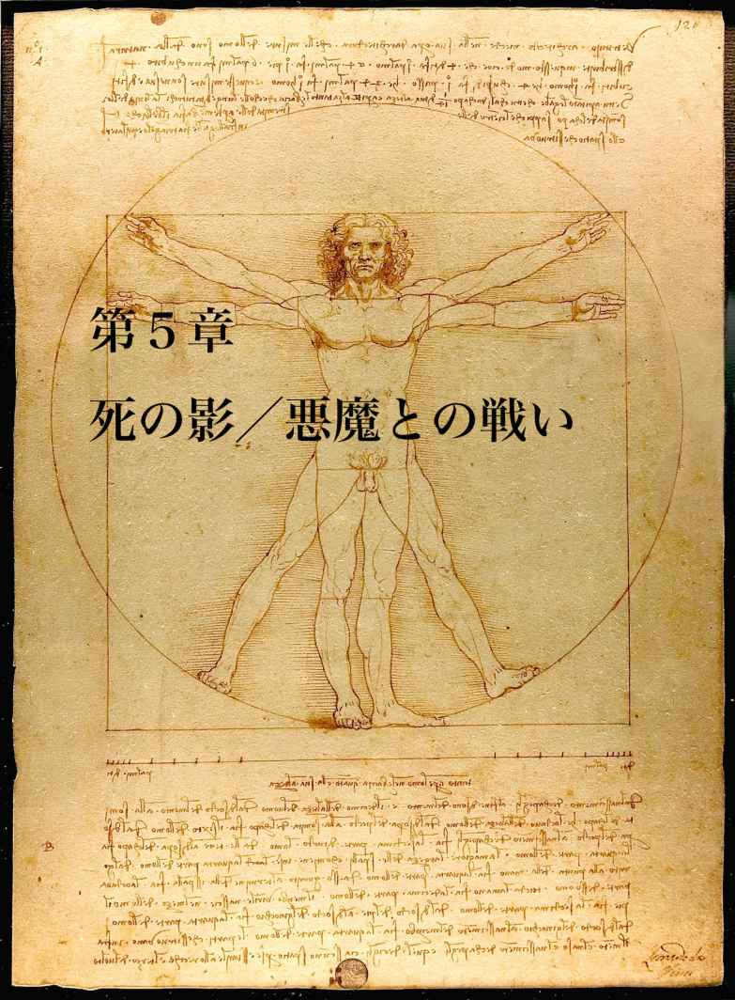

| awake | |
| abejunichi | |
| abejunichi (2017) | |
目 次
*
「人類の旅はどこから始まったの？」
妻が僕に尋ねたのは、サンフランシスコの南にある小さい町のホテルからシリコンバレーへ向かう車の中だ。結婚してしばらくは仕事の話ばかりで、出会った頃のように話すことができなかった。だからアメリカに来てよかったと思う。僕に強い確信があったから、出発前から車を借りてサンフランシスコからシリコンバレーへ向かおうと話していた。
「アフリカに生息していた最初の人類は、６００万年前から７００万年前に、チンパンジーから人類という種にわかれたってきいたけど」
僕は運転をしながら彼女の質問に答える。
「そういうことじゃなくて」と彼女は言う。「そういう科学的なことじゃなくて、どう思うのかということなのよ」
妻がそう言うのは、僕が自分で考えたり、話したいと思っていることを引き出そうとしているからだ。
「何が人類のはじまりかということは、わからない。今日と明日の区別は、時計というものが発明されてから凄く明確になった。起きたことは、ものごとの実際よりも、ずっと後でラベルを貼られて明確にされる」
そう言うと彼女は旅先ならではの笑顔を浮かべる。もうここはアメリカなのだ。旅の間は現実的な問題は忘れてしまえばいい。
アメリカに来て思うことは、道がとても広く、空がどこまでも広がっているということだ。言葉も思った以上に自分たちが遠くから来た人間であることを教えてくれる。
フリーウェイの両側に茶色の山肌が広がっている。カリフォルニアの海岸は地中海性気候で夏は涼しく、冬は温かい。山肌は乾燥した気候のせいか、ぽつりぽつりと樹木があるだけだ。太陽の強烈な日差しの強さはカリフォルニア独特のものだろうか？ 日本で感じる太陽の光よりも輝きはずっと巨大だ。
結婚して半年が過ぎた後の旅行をハネムーンと呼べるなら、僕の念願は叶ったことになる。ずいぶん昔からアメリカに行きたかった。そして行くならシリコンバレーだと思っていた。聖地という言葉で自分の行きたい場所を表現してきたけれど、こちらに住む人々にとっては、自分たちが日常的に住む世界でしかない。でも近い未来、シリコンバレーが聖地として崇められる場所になるのではないかと思っている。たとえば人類の祖先が願ったことが、何十世代を経て叶うように。
「あらゆる生命がどう生まれ、どう誕生したのかはわからない。無機物から有機物が誕生するとは考え難いから。だからミッシング・リングとして、今なおわからないことや考えなければならないことは、無数に存在する」
僕はそう自分の意見を述べる。
*
僕たちがアメリカで本当に自由に話すことができるようになったのは、新しい年の１月１日のことだ。アメリカへ行くことを願っていたのは、妻と出会うよりもずっと前のことで、この旅は僕の夢と言ってしまってもいいかもしれない。故郷の海の対岸にある空港を眺めながら、いつか自分が空へ向けて飛び立つ日を何年も待ち望んでいた。
空港で働いていた僕は、世界中へ運ばれていく貨物をずっと眺め続けていた。ともに働いていた上司は「トランクケースの中に潜りこんで世界へ運ばれたいよ」なんて冗談を言いながら、毎日の仕事を正確に繰り返していた。何百日もそういう貨物とともに朝と昼と夜を繰り返した。通勤の朝の電車には、キャリーバックを持った旅行客の集団が楽しそうに空港へ向かっていた。僕は彼らのことをずっと見てきた。彼らや彼女たちにとって海の向こうへいくことは、なんでもないことなのかもしれない。でも自分がそう簡単に世界へ飛び立つことができるとは思っていなかった。まずお金の問題もあった。語学力の問題もあった。そういうことよりも本当に自分ひとりで海外へ行くことが正しいことなのか確信を持つことができなかった。一度は実際にパスポートをとって、ガイドブックを購入し、思いきってチケットさえ購入すれば、いつでも海外へ行くことができる状態をつくった。でも５年間有効だったパスポートは期限切れになっていた。その間に自分が望んでいたささやかだけれど幸せな暮らしを手にした。妻と出会い、様々な困難に打ち勝って結婚し、小さな平穏の時を迎えた。
すぐにハネムーンに行くことはできなかった。お互いの仕事の問題もあったし、結婚式には費用もかかっていた。だから結婚という夢を達成してから、本当に海外へ行く準備をはじめた。そしてずっと昔からアメリカへ行きたいと強く願っていたことを思い出した。
出国ゲートを潜り抜け、空港から海の向こうの自分たちの住んでいる世界を眺めると、世界へ飛び立てるのだという実感がわいた。対岸の海辺で僕は何年もいつか飛び立つ日のことを願い続けていたのだ。夢はその最中にいるよりも思い描いている間がひと際美しいと思う。ずっと願っていた旅立ちの日がようやく訪れたのだと思った。
きっと人間の美しさは願う時間そのものにあるのだろう。
*
９時間のフライトを終えてサンフランシスコ国際空港に降り立つ。アメリカへの入国審査は、事前にインターネットで調べていたよりもとてもシンプルだ。入国審査官は、僕たちが自分たちの旅行目的を「観光。そしてハネムーンです」と説明すると緊張をほぐすように笑顔を浮かべて「カリフォルニアはとても良いところだ」と言ってパスポートに入国のスタンプを押してくれる。
僕たちはサンフランシスコ国際空港を走り回るフリートレインに乗ってレンタカーセンターへ向かう。窓からは日本と同じような曇り空がみえる。その下にはハイウェイを車が走っている。異国の実際の景色を眺めてもここが本当のカリフォルニアだという実感がわかない。まるで飛行機という密閉された空間に閉じ込められていた間に、誰かが少し世界を作り変えただけのように感じられる。何より灰色の空が旅が本当に正しいものか決めかねているというように中間的だ。
レンタカー会社のスタッフが選んだ車は白色のフォルクスワーゲン・ビートルだ。曲線的なフォルムに圧倒される。好みよりも派手だし、高級すぎると思う。しかしレンタカー会社の案内の人に別の車に交換してもらうだけの交渉をする英語力が僕にはない。
妻は「いいじゃない」と言って、助手席にもぐりこむ。
初めての左ハンドルに戸惑いを覚えながらエンジンをかけてみる。力強いエンジンの音がする。車内は広く清潔だ。ワイパーと方向指示器の位置が逆であることを確認してから、ゆっくり車を走らせる。
アメリカが右側通行であることのシュミレーションはグーグルマップのストリートビューで行っている。そして実際の道で車を走らせることができるという感覚を掴んでいる。日本ではもう何年も車を運転してきたのだ。ほんの少し運転すれば慣れるだろう。
車道に出ても、方向指示器とワイパーの位置を何度も間違えてしまう。でも普通に車を走らせることはできる。
彼女にi P h o n e を使用してホテルまでのナビゲートを頼む。事前に１０１フリーウェイに乗って、ほんの十数キロ走るだけでホテルまで行くことができることもわかっている。でもフリーウェイの入り口がわからない。
「どこをどう走ればいい」
妻に尋ねる。「わたしはアメリカの道には慣れていなくてそんなに簡単にナビゲートできない」と妻が言う。とにかく他の車に迷惑にならないように道をひとつひとつ確かめながら運転する。
車を走らせることに慣れるだけの交通量が少ない道路がサンフランシスコ国際空港の周辺にはない。日本とはすべてが逆になったような右側通行の世界で車を走らせることは、取り立ての運転免許で公道を初めて走ることよりも難しい。交通ルールが違う。案内表示が違う。右車線から左折するその方法が違う。まるで鏡の中の世界のようにすべてが反対だ。
妻はi P h o n e を駆使して、なんとかナビゲートしようとしてくれている。でも僕は「こんな状態でいきなりフリーウェイを走ることはできない」と言う。
「じゃあどうするのよ」と妻が言う。
「とにかく穏やかな道を少し走ってみるしかない」と言う。地理がわかっていないからできるだけ慎重に走るしかない。ハンドルを両手でしっかり持つ。アクセルとブレーキの感触を何度も確かめる。道は日本と違って何車線もある。そしてひとつひとつの道幅が広い。
少し小高い丘の上にある町をゆっくり走る。シートベルトもちゃんと着用している。問題は何もない。
でも後ろからスピーカーを通して英語が聞こえる。青いランプを光らせて警官が僕たちに向けて何か呼びかけている。
やってしまった。パトカーのランプをみて最初に思ったのはそういうことだ。旅の最初でつまづいてしまったのだ。でもなんとか気持ちを落ち着かせて車を道路の脇へ停める。背後にアメリカの警察の車が停車し、ふたりのアフリカン・アメリカンの警察官が巨大な銃を腰にぶら下げて近づいてくる。僕は神様に向かって何も悪いことはしていませんと心の中で言う。妻が冷静に「とにかく両手を頭の上にあげて」と言う。とてつもない恐怖感の中で妻の言うとおりにする。よりによってアメリカに来て初日に警察に捕まるなんて。本当に何が起きているのかわからない。
「一旦停止でなぜ停まらなかったんだ」
黒人の警官は英語で僕にそう言う。言葉の意味がわからない。妻が国際免許証と日本の免許証を出して「わたしたちははじめての海外で運転のしかたがわからなかったの」と英語で言う。黒人の警官は「日本でも停止すべきところでは停止するべきじゃないか」と言う。妻はしっかりと自分たちはまだ慣れていないだけだという説明をする。
彼らはしばらく何も言わずに僕らをみている。少しの間、沈黙がある。でもその短い時間が僕にはとても長い時間のように感じられる。鼓動がとてもはやく脈うつ。でも彼らは何かを英語で話して僕たちを置いてどこかへいってしまう。
「気をつけるように。そして良い旅をって彼らは言ったのよ」そう妻がいう。
「怖かった」と僕は言う。
「当たり前よ」と妻は言う。
日本で学んだアメリカの交通ルールをネットでもう一度調べ直す。そしてきっとオールウェイストップの標識を見逃してしまったのではないかと言うことを話す。アメリカでは信号のない交差点が複数ある。そこでは一旦停止を行い、停止した順番に発車しなければならない。
「とにかくホテルへ行こう」
気落ちした心と恐怖心をなんとか落ちつけて、ホテルへのナビゲーションを妻に頼み、車を再び走らせる。
*
ホテルはフリーウェイを降りるとすぐ側にある。海がみえていて、とても落ちついている。僕は車を駐車場に停車させる。
ホテルのチェックインはとてもスムーズだ。日本で予約をしていたから、証明書を提示し、クレジットカードをみせるだけでとても簡単にルームキーを預けてくれる。僕たちが日本人であることは何も問題がない。
部屋のドアを開けると広いリビングルームとキッチンがある。さらに奥の扉を開けると大きなベッドルームもある。空調は自動的に適温に整えられている。疲れた身体でソファに寝転ぶ。妻が荷ほどきをしてくれる。時刻は１４時を少し回ったところだ。「さっきのトラブルは本当に怖かったよ」そう妻に言う。
何か飲み物を。そう思ったところで自分たちが何も持たずにホテルに来てしまったことに気づく。
「どこかご飯を食べることができる場所を探さなければならない。このホテルはキッチンはあるけれど、ディナーはないんだ」そう彼女に言う。
「何かホテルには売店のようなものがあったはずだけど」と妻が言う。
僕と妻はまずホテルを散策し、エレベーターですれ違ったホテルの従業員に飲み物はどこで買えるのかと尋ねる。テーブルを運んでいるホテルの従業員は「１階に売店はある」と教えてくれる。
インターネットではコンビニエンスストアのような売店がホテルに併設されている情報が掲載されていた。でも実際にはロビーの脇に簡単なドリンクとタイ製のカップヌードルが置いてあるだけだ。そして値段は考えていたよりもとても高い。インターネット上の情報は、実際と違う場合がある。泊まっているホテルはかなり良いホテルだが、想像していたよりも豪華というわけではない。
ミネラルウォーターを何本か購入する。ミネラルウォーターを購入することも、僕の英語力では難しい。ホテルのフロントにいる女性に何度も言葉を聞き返される。発音や文法に問題があるのだ。
やっとのことでミネラルウォーターを購入し、なんて物価が高いのだと妻に言う。妻は歩いてどこかショッピングができる場所を探そうと言う。
夕日を眺めながらホテルの周辺を歩く。インターネットでウォルマートなどのスーパーが近くにあることを確認している。初日の目標としては、まずホテルにチェックインができて、車を運転することができて、何か買い物ができればいいと思っていた。しかし海沿いのホテルの周辺には何もない。道をどこまで歩いてもかつてショッピングモールだったであろう廃墟があるだけだ。なぜショッピングモールの廃墟があるのだろう？
「何もないね」妻は言う。
「インターネット上の情報が古いものなのかもしれない」僕は答える。
「とにかく水や食料を購入してなんとか晩御飯を確保しなければならない」
僕は駐車場に並んでいる白いフォルクスワーゲン・ビートルを眺める。
*
i P h o n e でホテルからできるだけ近くにあるスーパー・マーケットを探す。陽が完全に沈んでしまう前にどこかで飲み物と食べ物を買わなければならない。たとえ車を運転することが怖くても、怖がり続けていてはどこにも行くことができない。
「なんとかスーパー・マーケットまでナビゲートして欲しい。僕は少しでも車の運転に慣れる。ナビゲートに慣れてくれさえすれば、きっとどこへだって行ける」
そう言うと妻とふたりでビートルに乗り込む。見知らぬ地で車を走らせる恐怖はまだ体の芯に残っている。でも何か食べ物や飲み物を購入しなければこのまま飢えてしまうだけだ。
狩りをしにいくようにスーパー・マーケットへ向けて車を走らせる。ホテル付近の道は車がそれほど走っていないから問題はない。
妻は何度もナビゲーションを間違う。目的のルートへ向けてどこの車線を走り、次にどう曲がり、どう店へ入れば良いか、日本でルートを検索するよりも道が入り組んでいてとても難しい。でもなんとか目的地に到着する。
スーパー・マーケットでは飲料水や、鶏肉や野菜やワインを購入する。店内は薄暗い。そして生の野菜が販売されていない。でも妻はアメリカでの買い物を楽しそうにしている。すれ違った黒人の女の子が店内の音楽に併せて歌いながら踊っているその様子にみとれる。何をどう考えてもここはもうアメリカなんだ。スーパー・マーケットで繰り広げられるダンスにそういう実感を抱く。
踊るということはとても純粋な感情の表現なのだと少女を見ながら思う。踊らされているのではない。彼女は踊っているのだ。
僕たちは買い物を終えるとホテルに戻り、スーパー・マーケットで買った鶏肉を焼いてワインを飲む。わざわざ買い物をする必要はなかったのかもしれない。食堂では、旅行客たちが集まり、みんなでワインを飲みながら楽しそうに過ごしていた。このホテルにはちゃんと簡単なディナーサービスがあるのだ。それを知らずにわざわざスーパー・マーケットに行った。良いことなのか、悪いことなのかわからない。ホテルにはちゃんと簡単な食事があったのだから。
旅ははじまったばかりだ。まだ自分がどれほど遠くへ来ているのか、実感がうまくつかめない。でも人類はその旅のはじまりから住処を探し、食べ物を探し、安全に暮らすことができる場所を探してきた。だから僕たちの旅のはじまりが、まず生きることそのもののようになったとしてもおかしくはない。
*
朝になるとホテルのエントランスづたいに食堂に行き、朝食のビュッフェを味わう。スクランブルエッグとベーコン、オートミールとパン、そしてサラダをトレーにのせる。あいている席に座る。ホテルの朝食は朝の５時３０分からはじまっている。まだ朝日は昇っていない。食堂は２０人ほどが食事をすることができる広さを有している。しかし時間が早いのかまだ４、５人しかいない。白人の太った男性がアジア風の顔立ちをした女性と食事をしている。ここでは彼らではなく、僕らが異邦人だ。でも彼らは僕たちのことを何も気にしていない。多民族が集まるアメリカでは、日本人はそれほど珍しいわけではないのだろう。木目調のテーブルは豪華というほどではないが、充分すぎる広さを有している。壁に吊るされた薄型テレビが朝のニュースを放映している。でも音声は小さく何を伝えているのか、映像からしかわからない。ベーコンを一口食べると味の本質が違うと思う。スクランブルエッグひとつ、ベーコンひとつの味が、似ているようで日本で食べるものと異なっている。なんだか別の惑星に来たみたいだ。
「箸の文化とフォークとスプーンの文化の違いって何だろう」
僕が妻に言うと「小さい子どもにとっては、フォークやスプーンの方が食べやすいんじゃないかしら」と返事をする。僕はその違いについて考え続ける。
朝食を終えるとホテルのエントランスの外側に出る。駐車場が広がっていて、向こうに海がみえる。今日は雲ひとつない青空が広がっている。そして海から力強い太陽の光が世界を照らしはじめている。太陽の輝きが違うと僕は思う。きっとここはより太陽に近い場所なのだ。
日本はちょうど新しい年が始まっている。でもカリフォルニアは今日は１２月３１日だ。メールで何人かの友人と両親に新年の挨拶を伝えながら、今日がカリフォルニアではまだ新しい年が明けていないことを不思議に思う。
*
僕らはホテルの部屋に戻ってサンフランシスコへ向かうか、郊外の町を探索するか話しあう。でも郊外を探索するよりもまず地域の中心地であるサンフランシスコへ行かなければならないという結論に至る。ホテルはサンフランシスコから２０k m ほどの距離にあったが、最寄りにステーションはない。まだ昨日の慣れない運転の恐怖が残っていて今日は車を運転したくないと妻に言う。何よりもサンフランシスコの交通事情がわかっていない。じゃあ電車に乗ろうと彼女は言う。電車に乗るには、ホテルの送迎バスで一度サンフランシスコ国際空港へ戻るしかない。
シャトルバスに乗り空港へ戻ると、英語の案内表示を頼りにサンフランシスコ周辺を繋ぐ鉄道・B A R T のステーションを探す。駅の入り口はガラスの回転式になっていて、空港から大きな荷物を持ってそのまま市街へ向かうことができるようになっている。インフォメーションでは白髪の白人女性が旅行客の小さな問題をひとつひとつ解決するために佇んでいる。日本とは異なってこういう案内を行う女性が年をとっていても働くことができるのがアメリカならではなのだろうという話を妻とする。
ガラスの扉をくぐり抜けるとステーションには日本と同じようにI C カードの改札がある。僕らはインターネットを駆使して情報を集め、カードを購入する。そして改札をくぐり抜ける。
駅のホームには、旅行客たちが大きなキャリーバックを持ちながら、次の電車の到着を待っている。サンフランシスコ国際空港とB A R T のステーションは、もうずっと以前からここにあるのだろう。壁はくすんだ灰色をしている。日本の鉄道と比べるとステーションに清潔さが欠けているという話をする。
数分間待つとの鉄道がホームに到着する。インターネットでは繰り返し日本を出たら注意しなければならないと警告を受けていた。だから最後列の座席に座り、自分たちが絶対に失くしてはならないもの、パスポートや財布などを確認しながら、恐る恐る列車の出発を待つ。シャツを着て短い茶髪でトラベルバックを持った白人男性は、まるで世界中を旅してきたかのようにリラックスしながら列車に座り、ミネラルウォーターを飲んでいる。僕や妻にある緊張と、他の乗客との間には明らかな差がある。なにしろ慣れない旅がはじまったばかりなのだ。でも列車はそんな不安なんて関係がないというふうに出発する。
「鉄道は日本の方が綺麗だね」と僕は妻に囁く。
「でもニューヨークの地下鉄はもっと汚くて危ないと言うじゃない」と彼女は言う。鉄道が発する音は日本の私鉄とそれほど違いはない。けれどそこにある清潔さへの態度の違いは明らかだと思う。アメリカの人が大切にしているものと、日本人が大切にしているものは違う。食事と同じように、同じ太陽の下で、国によって小さいかもしれないが明らかな違いが生まれている。
窓からみえる風景は、車でフリーウェイを走った時よりももっとアメリカの人々がどのように暮らしているのか教えてくれている。建築様式は違っても日本と同じように同じ造りの住宅が丘陵いっぱいに並んでいる。中心へ向かえば向かうほど都会的な建物が増えてくる。ただ日本と違うのは、瓦のようなものが住宅の屋根を覆っていないことだ。住宅は三角形の屋根を有しておらず、平面的な屋根を持っていることが多い。橙色やオレンジがかった色の住宅がどこまでも並んでいる。ホテルの部屋はとても広々としていたが、カリフォルニアに住むすべての人が、くつろげる広い部屋を持っているわけではないのだろう。鉄道から眺める景色は日本とは違う。そして様々な文化的な違いがある。でも、そこにある人々のささやかな暮らしはどこかでは同じなのだ。
*
いくつかのトンネルを抜けて鉄道が地下を走りはじめると、緊張感は増幅しはじめる。暗闇が怖いなんて思いはずっと子どもの頃のことだと思っていた。でも景色が消えさり闇の中を運ばれていると、自分たちがいったいどこへ向かっているのかがわからなくなってしまう。i P h o n e のマップアプリは地図の上で自分たちがどこにいるのか、その現在地点を青いマークで記してくれている。画面上では明らかに市街へ運ばれている。しかしその実感がない。画面から目を離し、周囲を見回しても旅行客たちが英語で何かを話しているだけだ。でもこの暗闇はいつもの地下鉄の暗闇と違うと感じる。
妻は何も話さずに座席にしっかりと腰を下ろして沈黙している。日本語で話すことが、周囲の乗客たちに奇異に感じられないようにあまり話さないのかもしれない。どこか遠くからやってきた人間ばかりがこの列車に乗っていたとしても、わざわざ自分たちが異邦人であることを打ち明けてしまう必要はない。そうでなくても僕たちは外見から明らかにアジア系の人間なのだ。
緊張は揺られている間ずっと続く。妻は窓の外のステーションの駅名を英語で読み上げる。「次の次ね」彼女はそう僕に耳打ちする。目的地であるパウエル駅まであと少しだ。
*
停車した駅がパウエル駅であることを確認してからホームに降り立つ。逆方向へ走る鉄道を待つ乗客と、今列車を降りたばかりの人々が混じり合って、誰がどこへ向かっているのかわからない。そういう中で、自分たちはここで駅の改札を抜けて地上へ向かわなければならない。どちらへ行くと改札なのか。英語の案内表示を確認しながら歩く。どこへ行き、何をするのか。運や経験にまかせて歩くことは余計な時間的、経済的なロスに繋がる。自分がどう歩いてきて、どこへ向かおうとしているのかはっきりさせなければならない。そして行動はできるだけ旅慣れたように行わなければならない。
暗い地下鉄の改札をくぐり抜けながらカードから正しい運賃だけが支払われたのか確認する。改札をくぐり抜けるととても巨大な都市が姿を表す。ビルが天に届くような高さで存在する。すべての建物は今、できたばかりのように新しい。行き交う人々の中には、僕たちと同じような観光客も沢山いる。でも僕たちは地下から地上に出たばかりでわけがわからない。さっきまで広がっていた大陸的な光景が、トンネルを抜けると機械的に洗練された大都市へと変貌している。
i P h o n e を片手に街を歩きはじめる。フィッシャーマンズワーフへ向かおうとしている。でも目的地までの距離感がうまくつかめない。
ユニオン・スクエアの広場へ繋がる階段を昇ったところで、おもちゃの兵隊のような制服をきたアフリカン・アメリカンの紳士が僕たちに話しかける。
「どこへ行きたいんだい？」
妻が慣れない英語で「私たちはフィッシャーマンズワーフに行きたい」と言う。彼は「ここから３ブロック歩いた後に北へ４０分ほど歩かなければならない」と言う。ケーブルカーの駅には長い行列ができていて、乗ってみたいけれど行列に並ぶ気にはなれない。
僕は歩いていきますと言う。
すると紳士はサンフランシスコのガイドマップをプレゼントしてくれる。きっとガイドの人なのだろう。
ありがとう。僕たちは彼にそう言うとショッピングスポットとホテルが集まるユニオンスクエアから北へ向けて歩きはじめる。
*
サンフランシスコは坂が多いとは聞いていた。本当に少し北へ向かうにもずっと上り坂だ。
朝だから店はまだそれほど開いていない。でも人々はもう動き出していて、それぞれの目的地へそれぞれの方法を用いて向かっている。坂がどこまでも続いている。ビルがどこまでも続いている。人々のサイズが日本人よりもひとまわりもふたまわりも大きい。でも朝の空気はとても澄んでいて、清々しい。地下よりも地上はとても開かれている。
歩き続けていると、スターバックスコーヒーの看板が日本と同じ佇まいでビルの１階に掲げられている。僕たちはその看板に少し安心する。何から何まで違うというわけではない。僕たちは店内に入り、レジまでの長い行列に加わる。空港での入国審査やホテルでのチェックインの時もそうだったが、ここでは何をするにしても英語で話さなければならない。母国語で買い物をする簡単さに比べて、何かを注文することさえちょっとした冒険だ。
妻は英語で話すチャレンジをとても楽しそうに行っている。コーヒーのトールサイズを購入し、アイスを頼んだのにホットが出てきたと言って笑う。僕はひたすらペットボトルの水を注文して、英語での会話の煩わしさから逃げている。でも妻はカップに自分の名前まで書いてもらっている。店員はハリウッドの俳優のようにすらりとした長身で素敵な笑顔を彼女にむける。僕は英語をあまり話すことができない自分をなんとなく惨めに思う。
*
言葉が通用しない世界。それは実際にそういう世界へ行ってみないとわからないことがあるのかもしれない。自分が子どものように無力で、父親や母親に何をするにしても見守られながら過ごしていた頃のようだ。でも歩くこと、走ること、話すことを少し覚えただけで、世界は違ってみえる。僕はまだ二本の両足で壁にもたれかかりながら立っているだけで、妻は楽しそうに世界を見まわしている。ふたりとも初めての海外なのに、僕は世界を恐れていて、彼女は希望に満ちた顔をしている。僕たちはここでは本当の意味で対等なのだ。車に乗って町と町を走り回り、美味しい店でランチをごちそうしたりしてきたのは自分の国で自分の経験と勘を充分に発揮することができていたからだ。でもサンフランシスコではその二本の両足で、坂道を一歩、一歩とのぼっていかなければならない。
僕たちは坂を登り続ける。街が別のリズムと呼吸で動いていることを感じる。言葉が別の成り立ちをしていることを感じる。そして街が生まれた歴史を建物のひとつひとつがささやきかけている。
妻が「わたしの行きたいところにも行って欲しい」と言う。だから直線的にフィッシャーマンズワーフへ向かうことをやめてグレース大聖堂へと向かう坂をのぼる。長い、長い坂だ。歩いているだけでじんわりと汗をかく。路上をケーブルカーが大勢の観光客をのせて走っていく。この街でケーブルカーは、観光客を目当てに生まれたわけではない。本当に厳しい勾配を自由に行き来するために生まれた発明だ。もちろん自家用車やバスで自由に坂道を行き来できるようになってからは、ケーブルカーは観光客のための風物詩になっていった。僕は坂道をのぼりながら妻に語りかける。
「すべてのものは必要性があって誰かの閃きのもとに生まれるのかもしれない。でも役割を終えると、それは必要性というよりはその街の歴史を伝える貴重な遺産になっていく。時代を超えて残っているものには機能美を超えた美しさがある」
妻はうなづくと「ひとつひとつの建物から美しさを感じるわ。そのひとつひとつがとても可愛らしいもののように感じられる。まるで子どもの頃に遊んだ人形たちの家みたい」
確かに街は人々が暮らしていても、そこに本当に人が住んでいるという実感がない。街の中心地はリアルだけれど、そこから少し離れればすべては美しい宝物のようだ。
ひとつひとつの通り、ひとつひとつの建物、ひとつひとつの風景に胸をうたれながら歩く。自分たちの世界とは違う歴史を持った街。美しい青空の下では、街はまるで天使たちが住んでいるように思える。散歩をしている美しい婦人が、白いコートを着て僕たちとすれ違う。彼女はきっと少しでかけてくるわと誰かに話しかけると、この街を自由に歩いて、そして僕たちとすれ違ったのだろう。そういう偶然があちらこちらにある。僕たちがしっかりとした決意を持ってこんな遠くまで来なければ、決して出会わなかっただろう人々。街に住む人々に親密さを感じる。
坂はどんどんきつくなってくる。「なんて坂だ」と僕は言う。なぜこんな頂きに街が広がっているのか。歴史を振り返れば、人々はずっと河のほとりの平地に暮らしてきたはずだ。だから都市は空高くビルがそびえていてもずっと平らな場所にあるものだと思っていた。でもサンフランシスコは別の成り立ちをしている。
ずっと坂道を歩いてきて後ろを振り返る。とても美しい世界が広がっている。異国の車が通りにずらっと並び、石造りの建物が眼下に広がっている。太陽は天に輝いていて、陰影を用いて素晴らしい絵を描いている。歩いている人々は、誰もが親しげな友人か、恋人たちか、夫婦のように親密だ。犬を連れたおじいさんは、まるで犬が自分の１番の親友とでもいうように散歩をしている。街の中心から坂をのぼり続けると、まるで自分が西洋絵画の中で自分の在り処を探し回っているような気分になる。でも僕はひとりではない。妻がそばにいて、新しい世界へ導こうとしてくれている。
その街の坂の上から世界中をみわたす。トランスアメリカピラミッドがずっと遠くにみえる。金融街のビル群もみえる。でも坂道の頂きはそんなビル群と比較してもずっと高いところにある。空がとても近いところにある。呼吸をすると新鮮な空気が肺のなかをかけめぐる。
グレース大聖堂はそういう場所にささやかに建っている。コンクリート造りの建築でパリのノートルダム寺院に似せられて造られた建物らしい。前には公園があって朝の散歩のついでに集まった人々がくつろいでいる。聖堂の扉を開けて中へ入る。静かな空間がどこまでも広がっている。
天井はどこまでも高い。ステンドグラスを通じて外の光が中へ差し込んでいる。祭壇が奥にあって、そこから祈りをささげるための長椅子がずらりと並んでいる。僕たちは足音をたてないように祭壇に向けて歩いていく。最前列では椅子に座り、一心に何か祈りを捧げている若者がいる。手をあわせ目を閉じて一生懸命祈っている。
あらゆる宗教建築は、役目を終えて、この世界にあるわけではない。荘厳に施された模様のひとつひとつの意味は消えてしまったのかもしれない。でも今も祈りを捧げる人がいて、神と深遠な対話を行っている。そういう行為のひとつひとつが人間の美しさであると思う。
長椅子に座ってみる。目を閉じる。心の中の願いをひとつひとつ確かめてみる。美しい静けさがそこにある。そしてこの静けさこそ求めていたものだと思う。
グレース大聖堂を出ると、とても美しい場所だねという話をする。何かを売りつけようとする看板もない。清浄な街が広がっている。地下鉄の中で感じた闇はここまでは届かない。実際に世界には光と闇が存在するのかもしれない。
*
僕たちはずっと北を目指して歩きはじめる。身体が軽い。下り坂が続いていてどこまでも歩けそうな気がする。歩きながら街を眺めること自体がとても楽しい。自分たちが生まれた町をこんなふうに歩いたことがあっただろうか。自分の生きている重さから、すっかり解放されたような気分になる。重力が半分になったかのようだ。
建物には必ず複数の出窓があって世界の光をとりこもうとしている。きっと太陽の光が尊いことを街の誰もが知っているのだろう。太陽は徐々に天空へ昇ろうとしている。でも朝の静けさは街のあちらこちらに残っていて、だから僕の心も静かなままだ。
そういう静かな興奮の中で街を歩き続ける。ゆるやかな下り坂の後には、上り坂があって、その後で遠くに何かみえる。僕たちは子どものように同時に「海だ」と言う。いつの間にかとても長い距離を歩いていたらしい。
彼女は日本で旅立つ前に購入したナイキのスニーカーがとても良いとしきりに話している。スニーカーならきっと走ることだってできるだろう。
「自分の魂まで自由になったようだ」と僕は言う。妻は「きっと何かから解放されているのよ」と言う。いったい何から解放されているのだろう。でも、今、目の前に広がっている世界を感じることのほうが大切だ。自分がどこまでも歩いていくことができる感覚をしっかりと感じることこそ、遠く離れた場所にいることの本当の価値なのだ。
でもずっと歩き続けると、歩道にゴミ箱が転がっている。どことなく嫌な予感がする。インターネットでは、アメリカには危険な場所も存在するという注意書きがあった。少しでも街が汚れていたり、家の窓に鉄格子があったりしたなら、そこからは引き返しなさい。警告を何度も読んだ。だからゴミ箱が少し転がっているだけで、これは危険な地域に入りかかっている前兆なのか？ と不安になる。異国では何もかもを開け放してしまうわけにはいかないと彼らは言っているのだ。
僕は「この辺りは大丈夫だろうか」と話しかける。妻は「ちょっとナーバスになりすぎよ」と言うと「ほら」と言ってずっと前を指差す。
セグウェイの集団がちょうど通りと通りを横切っていくところだった。５、６台のセグウェイが颯爽と街の間を駆け巡っていく。幻をみたのかと思う。けれど彼らの楽しそうな姿は、歩道に散らかっていたゴミをすっかりと忘れさせるぐらいの良い前兆だった。このまま歩いていけばいい。少し沈みかけていた心を取り戻して、また海へ向けて歩きはじめる。
遠い世界では、感覚がとても研ぎ澄まされる。美しいもの、美味しいもの、光の加減などがそのまま直接的に伝わり、醜いもの、汚れたものが、避けねばならないものとして感じられる。僕はとても注意深くなる。自分が住む世界ではそういう光と影の濃淡は、ずっと和らいで注意をひくものではない。何も気にしないで生きていられるだけの自分自身の力が、故郷では自分たちに備わっている。でも自分たちの生活から遠く離れると、事態は一変してしまう。ささいなことが、自分たちにとって良いことにも悪いことにもなる。善なるものと悪なるものが及ぼす影響が深く強くなる。ひとたび天から降り注ぐ光の洪水を全身に浴びたかと思うと、闇のその暗い影から、自分たちを噛み砕いてしまおうと見つめるふたつの獣の瞳を感じる。サンフランシスコの街では至るところで光と闇が対決していて、僕たちの心にさあどちら側につくんだ？ と語りかけている。
*
フィッシャーマンズワーフは大勢の観光客であふれている。店が立ち並ぶ通りでストリートパフォーマーがパフォーマンスを行っている。海に船が並べられていて、潮の香りがする。アフリカン・アメリカンの青年が英語で観光客を相手に何かを強く訴えかけている。妻は「きっとアルカトラズ島へのボートに乗らないかと言っているのよ」と言う。僕は「いくら観光地になっていると言っても刑務所には行きたくないよ」と言う。数々のマフィアが海の上に浮かぶ監獄島で死んでいった。ずっと前にはアルカトラズは軍事要塞の島でもあったらしい。有名でもそういう不吉な場所には近づきたくなかった。
漁師の波止場という名前のとおり、フィッシャーマンズワーフにはまるで市場のように様々なものが売られている。いくつかの店はずっと以前から観光客を相手に古い佇まいのまま商売を続けている。でも海に面した通りを歩きながら、あのセグウェイの集団が感じさせてくれたような未来の姿を感じることができなくてがっかりする。どんなアメリカのガイドブックにもフィッシャーマンズワーフは観光名所として掲載されている。だからとりあえずの目的地としてこの海まで歩いてきた。確かにアメリカ的な通りだと思う。大勢の店の人々が何かいいものがあると呼び声をかけてくる市場のような場所だ。でもここにある騒々しさ、人々が大勢いて、何かをみつけようとしながらそれでも何も珍しいものを見つけることができずにただ賑わっている風景は、日本でも感じたことがある観光地特有のものだ。
「何かを買ってお昼にしない」そう妻が言う。
もう昼の１２時をすぎている。
「どこか良い場所があればいいけれど」と言う。
妻は「さすがに歩き疲れたの。どこかゆっくりできるところがあれば」
もう１時間以上も歩いていて、このフィッシャーマンズワーフの賑やかな通りをただ歩くことしかできない。賑やかでパワーが溢れている。でもここは僕たちが求めている場所ではない。
ある店は大変賑わっていて、ランチの為の行列ができている。その行列に加わってランチを食べることもひとつの方法かもしれない。でも僕にはひとり２０ドル以上するそのランチの価値がわからない。為替レートではドルが強く日本人の僕たちにとって物価は高い。
僕は子どもの頃、大阪のアメリカ村で買い物をした時のことを思い出す。都市の中心まで行って海の向こうからやってきた商品を買う。まだ商品の価値がわからない少年に対して、あらゆる販売員が「これは価値があるものだ」とセールストークをしかけていた。まるで野獣がその牙を隠しているように。購入を促す響きに対して、まだ若い僕は自分の目でその商品の価値を見定めなければならなかった。本当に求めるものが何かわかるまでうまくやることはできなかった。
状況は同じだった。僕はうまく英語を話すことができない。妻は少しは英語を話すことができる。だからどこか店に入れば、自分たちで何かを選ぶことはできただろう。でも自分たちが日本でランチを選ぶ時のように望むものを手に入れるための経験がない。
「とりあえずお腹を満たすことが今できる精一杯のことのように思える」と言う。「ひとつとても評判の良いホットドックの店があるけれど、ゆっくりとくつろぐことはできないだろう。どこかこの賑やかな通りを離れて落ちついた場所を探そう」
*
フィッシャーマンズワーフから少し離れたところにあるサンドイッチの店にたどり着く。店に入るとウェイターが席へ案内してくれる。メニューに書かれた英語を読みながら、自分たちが食べることのできるものを探す。サンドイッチは日本の価格と比べて、２倍も３倍も高い。でも僕たちはもう店に入ってしまっているし、何か注文をすることが必要だ。当たり障りがないと思われるサンドイッチを注文すると、店内を見渡す。金髪の少年が母親に何か英語で話している。母親は、たぶんそれはダメなのよというような意味の言葉を話して少年の髪を撫でる。店内の窓からは海がみえていて、きっと遠くにはアルカトラズ島もあるだろう。でも僕は自分が目指していた場所がここではないという思いにとらわれていて、妻に申し訳ないという思いでいる。地下鉄でそうであったように公共の場所で自分たちが考えていることを日本語でうまく話すことができない。そしてこのサンドイッチ屋でくつろいでいるアメリカの人々の平穏な雰囲気を変えてしまいたくはない。
運ばれてきたサンドイッチを美味しいと言いながら食べる。何か批判的なものが心の奥にはあったけれど、それを言葉にしてしまうことはできない。遠い異郷で少なくとも自分たちが不快な目に合わずにランチを食べることができたことが現時点におけるひとつの達成なのだ。
旅では何が起きるかわからない。とても素晴らしい夢のように宣伝される観光地は実際に訪れてみると思い描いていた素晴らしさがあるわけではない。でも目的地そのものよりもサンフランシスコの美しい街並みを歩いた一瞬、一瞬が素晴らしい体験だ。
「帰りはどうする」と店を出た後で妻が言う。
僕はi P h o n e を片手に何らかの交通機関がまたユニオンスクエアへ運んでくれないかルートを探す。サンフランシスコは公共の交通機関が発達していてB A R T で使用したI C カードでバスも利用することができる。
「バスに乗って帰ったほうが良さそうだね。もう一度歩くには少し遠すぎるから」
僕たちはi P h o n e のナビゲート通り停留所でバスがやってくることを待つ。海外の公共交通機関はまるで時刻通りに来ることがないとインターネット上の記事で読んだことがある。でもサンフランシスコのバスは時刻表通りの時間にやってくる。バスの扉が開いた時、歩かずに帰ることができることに感謝をする。
僕はI C カードをかざしてすんなりとバスに乗り込むことができる。でも妻のカードはエラーの音を響かせる。「カードの残高が足りないんだ」と僕は言う。バスの運転手は「I t ' s O K ! 」と言って僕たちを中に入れてくれる。それを何かありがたいことだと思って、バスの中に入る。
子どものようにバスの中からサンフランシスコの美しい街を眺める。歩いて街を感じていた時よりも、街はしっかりと目覚めていて活動的になっている。周囲の店も開いていて人々が忙しそうに働いている。再びサンフランシスコは美しい街だと思う。親切なバスの運転手とまるで貸し切りのようなバスの車内が、心を弾んだものにしてくれる。
でも中華街が近づくと大勢の中国人の婦人がバスに乗り込んでくる。座席を満たし、もう誰もバスに乗れないというほど人が溢れる。
僕は突然、何が起きたのだと思う。明らかに車内の雰囲気がおかしくなっている。何を話しているのかわからない。中国語で何か話し続けている。
やがて中華街の停留所でバスの運転手と中国人の女性が何か言い争いをはじめる。
バスの運転手は英語で何かを話している。
中国人の女性は中国語で何かを話している。
両者は激しく言い争いをはじめる。何が起きたのだ？ 僕たちはとても恐ろしく思う。窓の外には中国語の看板が並び、サンフランシスコの中で異質な世界をつくりあげている。中国の人々は英語を覚えて街に同化しているわけではない。うまく話せなくても英語を話そうともしない。根源的に中国語を話し、自分たちの文化的なルーツを保ったままサンフランシスコにひとつの巨大なコミュニティを形成している。バスの運転手と中国の婦人の言い争いはとても激しい罵り合いになっている。どこかで銃声が響き渡る。僕と妻はその激しい銃声を耳にする。
自分たちが何か問題の発端になってしまったのではないかと怖れる。妻がお金を支払わないでバスに乗ってしまったことが、ひょっとするととても大きな問題だったのではないか。でもバスの運転手も中国人の女性たちも僕たちを責めているわけではない。僕はなんとなくその険悪な雰囲気の中で妻に「ちゃんとお金を払ったほうが良さそうだ」と言う。妻は財布の中から２ドルを手にすると「降りる時にしっかり払うわ」と言う。
聞こえた銃声が本物の銃声だったのかどうかを確かめる方法はない。ただ僕も妻も現実に銃声を耳にしたのだ。そして実際にバスの中でアメリカのバスの運転手と中国人の女性との間で、とても激しい言い争いが起きた。
とても素晴らしいことと、とても恐ろしいことが交互に存在している。自分たちが何か行動の選択を誤れば、本当に恐ろしいことになってしまうこともあるだろう。
ユニオンスクエアにバスがたどり着くと、僕たちは運転手に慣れない英語で感謝を何度も伝えて、２ドルを支払ってバスを降りる。
*
ユニオンスクエアは朝とは違い、大勢の人々が歩いている。この１年の最後の日なのだ。世界中のあらゆる民族、宗教、言語、文化の違いを乗り越えて人々が集まっている。あるデパートメントの正面では、僕が今まで聞いたことがない現代音楽的なパフォーマンスをバンドが演奏している。その魔術的に美しいメロディとリズムが心を捉える。でもさっき耳の奥で響いた銃声が忘れられなくて美しさを充分に味わうことができない。まだ時刻は１５時をまわったところだったから、僕たちはサウスオブマーケットに向けて歩こうとする。人々が溢れている都市を、もっと感じてみたい。
でも明確な目的地を選択しなければならないのにまたなんとなくという感じで目的地を選んでしまった。歩き続けていると車椅子に乗った足が片方ない男性をみかける。禁じられているのに平気で街中で煙草を吸う人をみかける。どこかで奇妙な匂いを感じる。通りがだんだん汚れてきている。心の中で少しずつ影がその本当の姿を顕わそうとしている。
「ホテルに戻ったほうがいいかもしれない」と妻に言う。
「そうかしら」と妻は言う。
「僕たちは朝早くから街に出て、時間の感覚もまだおかしい。街は光と闇が交じり合っていて何が起きるのかわからない。でもそれはただ勇気が足りないだけかもしれない。でもさっきの銃声にとても驚いていて、街にいる人々にある種類の冷たさを感じるんだ」
妻にそう言うと手をとり、ユニオンスクエアのパウエル駅へ戻ろうとする。朝の清々しい光はもうとっくに変化していて、何時間かすればもうすぐ闇が街を覆う。
サンフランシスコの街では光と闇が激しく戦っている。僕はその光と闇の戦いが、自分の心の中でも起きていると感じる。昨日のアメリカの警官。そして中華街の銃声。インターネット上の警告。そういったひとつひとつのことは僕たちに注意せよと呼びかけている。ここは自分たちの国ではないのだ。そう心の中でメッセージが繰り返されている。でも同時に光輝く太陽があり、祈りを捧げることができる教会と美しい街並みがある。太陽の光は、僕たちに善なるものの在り処を教えてくれている。でも道をどう歩いてその善なるもののほうへいけばよいか、今の自分にはわからない。
*
ホテルに戻ったのは１７時ごろだった。それぐらいの時間からホテルのサービスのディナーははじまっているはずだった。でも食堂には誰もいない。ホテルのマネージャーは今日は祝日でディナーのサービスはないんだということを妻に話している。
僕たちは昨日買い物をした残りの食材と、ホテルの売店のカップラーメンで侘しい晩御飯を食べる。ツイッターの情報ではサンフランシスコ市内で大きな花火が打ち上げられたとある。人々が混じり合うことで争いが生まれるのか。それとも祝祭が生まれるのか。市街からそれほど遠くない場所にいながら、自分の勇気が少し足りなかったのかもしれないと思う。
１月１日。新しい年のはじまりは日本では昨日のことで、カリフォルニアでは明日のことだ。僕は妻に「明日、最低限しなければならないことは水と食料を買うことだ」と言う。「そしてもし車を走らせることができるならシリコンバレーをみてまわろう。でも今日はまだ勇気がないんだ」と言う。
「せっかく来たのだから勇気をだして」と彼女は言う。
僕はかつてアメリカに行った友だちの話をする。彼はアメリカに行くことはできたけれど、怖くなってホテルから一歩も外へ出ることができなかった。僕は彼になぜ？ と聞いた。彼は答えなかった。僕には今その答えがわかる。
「僕にはわからなかった。彼がなぜアメリカに来て１歩も外へ出ることができなかったのか。でももし自分が１９歳で、アメリカにある暗闇のようなものに捕らえられてしまったら、きっと何もできなかったと思う。そしてたぶんこの年齢でも自分ひとりなら何もできなかったかもしれない。アメリカには強烈な光とともに、闇も深く横たわっているんだ」
そう妻に話す。
「中華街の銃声を覚えているか」と僕は話す。
「わたしも確かに銃声を聞いた」と妻は話す。
「あの銃声がとても怖い。民族と民族の間にある壁が、あの銃声を生んだように思える。もし未来のどこかで恐ろしい戦争が起きてしまったら？ 人と人。文化と文化には違いがあって、それでもお互いを認め合うことができると信じている。でも想像していたよりも、闇はずっと深いんだ。文化と文化は混じり合っているようで、その深いところで対立している部分がある」
恐怖を感じたことを妻に打ち明ける。
「きっと何も怖くはないわよ。確かに銃声は響いたのかもしれない。今日は大晦日だしあるいは何かの象徴であるのかもしれない。でも実際に本当の意味で誰かが今日、あの銃声で死んだわけではないと思うの」
妻は確信に満ちた声でそう語りかける。
「サンフランシスコはとても素敵な街。でもあなたが本当に行きたい場所はもっと別のところなのでしょう？」そう彼女は僕の目をみて話す。
「明日、目が覚めればきっとわかっている。でも今はまだ明日のことは約束できない。でももし僕の中の勇気が勝ったら、君を特別な場所へ連れていく」
そう彼女に言う。
*
深い眠りから目覚める。夢の場所へ向かう。何も恐れることはない。自分はそこへ行くためにここまで来たのだ。確信している。時刻は１月１日の夜が明ける前の４時。妻も自然に目が覚めたようだ。「準備をして出発しよう。今なら何かができると思う。まず車を走らせてシリコンバレーに行こう」
僕たちはカリフォルニアの薄闇のハイウェイをずっと走っている。彼女は外の景色を眺め続けている。五車線の道を車が１００k m 以上のスピードで走っている。カリフォルニアのフリーウェイと日本の高速道路ではスピードの制限が違う。アメリカのドライバーたちは自然に１００k m オーバーの世界をドライブしている。そのスピード感に馴染もうとする。
朝の光が澄んだ闇の世界を少しずつ変化させていく。やがて青い空が目の前に広がりはじめる。フォルクスワーゲン・ビートルのハンドルが手に馴染みはじめる。
シリコンバレーまでのルートをスマートフォンがナビゲートしてくれている。音声にあわせてハンドルを動かす。でもそれはロジックに裏付けられた導きだ。どこをどう歩めばシリコンバレーに行けるのかスマートフォンは教えてくれる。但し、人類の行く末まで人工知能が教えてくれると思わない。
「人間が信じてきたこと、そして未来を感じるセンスは、本当は直感的なところから生まれていると思う。だから人類というのは、直感的なものを頼りに歩んできたとも思える。論理的に説明ができることというのは、神秘を論理によって人類が自分で自分のものにできた範囲のことにすぎないんじゃないかな？ でもそれは人間が人間をより本当に理解するということだと思うけど」
*
彼女と付き合い始めた最初の頃は、僕も彼女もおそるおそる相手に近づいた。自分が否定されるかもしれない恐怖がそこにはあったからだ。どうでもいい相手だったなら、お互いそんな恐怖は抱かずにすむ。相手に傷つけられることを恐れることもない。でも、大切だと思うから、お互いを知ろうとし、その心を理解しようとする。あらゆる民族、あらゆる宗教、あらゆる人間がおそるおそるお互いに向けて歩みよるなら、問題はそれほど多くは発生しないだろう。真実を恐れながら歩んだのなら。
僕は未来に憧れながら、同時に恐れてもいた。
コンピュータの未来は、今では人類の未来と言ってしまってもいいと思う。あるいは、人類を新しく進化させる契機になりつつある。僕はあらゆる問題の根源をあらゆる宗教の発生よりももっと以前に設定し、そこから未来を考えようとしていた。人類に起きた大きな変化を、農耕、工業化と並置して、情報化社会を捉えた学者がいたが、この１０数年でその考えが本当に正しかったと感じている。そしてこれからももっと大きなイノベーションが起きるだろう。
「ある猿が二足歩行したことで手を使う自由を手に入れたのか、そもそも高い枝の上にある木の実を取ろうとして二足歩行したのか。さらに人間は道具を使うことができるようになった。その結果、脳の容積が大きくなったのか、あるいは脳が大きくなったから二足歩行できるようになったのか。因果関係は推測するしかない。でも世界中の誰の根源にも新しい発見があった」と僕は話す。「例えば僕らの会話がすべて記録されていて、１００年だか２００年だか遠い未来に、遺跡のように見つけられたとする。随分と知性のない会話をしていたんだなと未来の人は思うかもしれない。でも、大昔の猿だって、脳の容積を増やそう、二足歩行しようと思って意図的にそういうことができるようになったわけではないんだと思う。それは何か神様の奇跡のようなものなのだと思うよ。そして、未来の人は僕らの会話を聞きながら、それはあくまで何かの偶然の流れのようなものだったんだということを理解するのだと思う」と僕は言う。
「わたしたちは論理的に何かを判断することを教えられている。でも世界のすべてが論理的ではないということなのね」と妻は僕に尋ねる。
「おそらくそうだよ」と伝える。
「ある意味では、苦しみから逃れるために僕らは生きている。そう前に話したよね 生きることは、何かを食べることが必要だし、眠ることも必要だ。だからどこかで何かを食べなきゃならないし、寒ければその寒さを和らげるために服を着なければならない。そういうふうに人間はひとつひとつ問題を解決してきた。歴史の中で人間たちはひとつひとつの困難に打ち勝ち続けてきた。でもそういったことのすべてが論理的にだけ為されてきたわけではないと思う」
妻はそれを聞きながらずっと遠くの世界を眺めている。
僕は言う。「歴史はひとりで作られるわけではない。歴史というものを考えれば、人類の生活ははるか昔よりもずっと良くなってきている。人口も増えているし、病に苦しむことも以前よりはずっと少なくなって、長生きができるようになってきている。現代でも戦争など、課題として残っている問題はたくさんあるけれど、問題をひとりで抱えているわけではない。人類という全体で考えるということが、ある意味では本当の解決へ向かうことなんだと思う。諦めではなく、ある問題に関しては他の人が対処してくれると思えることは、争うことよりもずっと人類的な解決への近道なんじゃないだろうか」
*
シリコンバレーはサンフランシスコの隣町のサンマテオからサンノゼまでの一帯を指す。正式な地名ではない。サンフランシスコのベイエリアには半導体メーカーが集まっていて、昔からコンピュータ産業の中心地だった。アップルやグーグルはそういう場所で誕生した。そしてサンフランシスコのベイエリア一帯は、シリコンバレーという名で世界中の誰もが知る場所になっていった。世界に張り巡らされたインターネットをリードするあらゆる技術は、この場所で生まれ、世界中へ拡散し続けている。僕がこの場所を新たな聖地として思い続け、訪れてみたいと願い続けていたことの本当の理由はそういうことにある。世界中でインターネットによって大きな変化が起きているからだ。
１０１フリーウェイを出て、C A -８５号線へ曲がっても道は車線が少し減少しただけで同じように高速道路が続いている。アメリカの町と町はフリーウェイで結ばれていて、どこへ行くにもフリーウェイを走り続けることが必要だ。１０１から２８０号線に合流し、アップルの本社があるクパチーノでフリーウェイを降りる。高速道路を降りても道は片側だけで四車線近くある。僕は大陸的な都市設計だと感心する。しばらく車を走らせるとアップルのロゴが町のいたるところにある。そしてアップルの本社であるインフィニット・ループにたどり着く。インフィニット・ループはアップルの本社の建物をぐるりと取り囲む道であり、アップルの本社の名前であり、終わることのない無限のループのことを指す。僕らはゲストと書かれた駐車場に車を停めて、無限のループを歩く。ガラス張りの大きな独特の建物がある。複数の建物が円を描くループの内側に建てられていて集積している。警備の車がこのインフィニット・ループをゆっくりと巡回し続けている。
少し興奮して写真を撮りながら妻に語りかける。
「僕らは何度もこうして無限のループを歩いているだけなのかもしれない。ずっと遠くまで来たと思ったら、それは円を描いた軌跡なだけで、いつの間にか最初の場所に戻っている」
インフィニット・ループを一周して最初のエントランスホールに戻る。世界のどこかからやってきたのだろう、観光客が写真を撮ってくれ、と僕らに言う。僕はいいですよと言うと、ちいさな子どものいる夫婦の写真を撮る。３枚ほど写真を撮りそしてカメラを返す。写真には彼らとしっかりとアップルのロゴが写っている。
僕は妻にもう一周歩こうと言う。
「人の一生は生まれて成長し、異性と出会って子どもを育てる。子どもが大きくなる頃に仕事をリタイアして年老いていく。子どももまた同じようなプロセスを辿って大人になり、そして新しい子どもを育てて死んでいく。そういう無限のプロセスであるように思える」
そう言うと彼女は「でも、そのひとつひとつのループにはそれぞれに独自の喜びや悲しみがあるでしょう」と言う。
「本当にそれらひとりひとりの人生はとても大切だと思う。そして僕らは同じところをぐるぐる回っているわけではない。新しい場所へ行き、見たことのない世界を見て、子どもたちに伝えていくことができる。僕のおじいさんが住んでいた頃の環境と僕らが住んでいる環境は違う。時にはとても悲しい気持ちになるけれど、長い歴史という視点から物事をみれば、以前よりもずっと素晴らしい世界で暮らしている。そして先祖がどれだけ願っても叶わなかった海の向こうの世界に、ちゃんと自分の足で立つこともできる」
僕はそう彼女に歩きながら話す。
「ずいぶん遠くまでやってきたように思えても、まだ結婚したばかりなんだ。自分たちがどこまでいくことができるか、確かめてみよう」
そう言うと彼女にむかって微笑む。
*
僕たちはアップルの本社、インフィニット・ループから歩いてどこか朝食を食べることができるところを探す。サンフランシスコと比べて、街はとても清潔で人々はその静かな世界で未来をみつめているようだ。僕たちはドーナツショップの扉を開ける。小さなドーナツ屋だ。カウンターには様々なドーナツが並んでいる。ドーナツとホットコーヒーを注文すると、座席に座り、静かにドーナツを食べる。
「世界にはサンフランシスコのような中心的な都市があり、その真ん中はドーナツのように空洞になっている。街の中心は人々が働くオフィスになり、人々はその住処を郊外へ求めて広がっていった。東京も大阪もそうだ。あらゆるものが中心に集まると、その価値が高くなり人口密度が多くなりすぎて、人が住む環境ではなくなってしまう」
ドーナツを齧ると、ドーナツはその中心の空洞とともに消えてしまう。ドーナツの中心にはかつて何かがあったのだろうか？
妻は「でもサンフランシスコも東京も素敵な街よ。あらゆるものが集まっている」と言う。
僕は「もちろん。たったひとつの正解があるわけではない」と言う。「ただ現象として都市はドーナツ化していった。もしこれから１００年、２００年の時間が過ぎたとする。都市はどうなっているだろう」
僕は妻にそう質問する。
「そんなことわかるわけないわよ」と妻は言う。店内に新しい客が「ハッピーニューイヤー」と言いながら入ってくる。誰もが親しそうに話している。
僕は「中心にいる人は、そりゃ儲かるのだと思う。でも長い歴史的な目をそういう人たちは持っているだろうか？ そういうことはちょっと信じられない。だって放っておけば、あらゆる人が中心にやってきて、そしてなんでもないことのようにお金を落としてくれるんだ。世界の未来なんてきっと考えてくれはしないよ」
僕は悲観的に話す。「でもどこかで誰かがそういうことに気づいているんじゃない」と妻は言う。
「もちろんそう思っているよ」と妻に話す。「アップルやグーグルは世界でも有数の最先端の企業だ。そして彼らはサンフランシスコ市内ではなく、郊外で新しい世界の中心を作っているんだ」
*
クパチーノは人口５万人ほどの町だ。それほど大きな町ではない。でもアップルの本社があることでシリコンバレーの心臓部と言う人もいる。日本人もかなり住んでいて周囲には日本食を食べることができるレストランや１００円ショップがある。１月１日は、インフィニット・ループにあるアップルのカンパニーストアは開いていない。だから僕たちは雰囲気を感じるだけだ。でも町はサンフランシスコと比べると田舎だけれど穏やかな静けさと、町を歩いている人たちのリラックスした雰囲気や、ジョギングしている人々の姿がある。走る姿を見ると僕も走らなければと思う。誰かが走っている姿は人を勇気づける。人々の生活がしっかりと存在し、誇りを持って働くことのできる仕事があり、人々はバランスのとれた生活をしている。町の人々は時々はサンフランシスコのような刺激的な都市へ行って朝まで酒を飲みながら騒いだりするようなことがあるのかもしれない。でも人間が本来持っている直感的な感性を論理的なプログラムやデザインにして人々に伝えるしっかりとしたバランスを保ち続けるには、町自体にきっと均衡が必要なのだろう。
僕はインターネット上で、シリコンバレーに住む人々の楽しみがクラブで享楽的に踊ったりすることではなく、野山を歩き、バーベキューをし、ジョギングをすることだと知った。コンピューターに向かって何万行のロジックと向き合う彼らにとって、本当に心を癒すのはきっと自然の中で家族と過ごすひと時や、静かな町を走り続けることなのだろう。
僕たちは次の目的地としてグーグルの本社であるグーグルプレックスがあるマウンテンビューへ向かう。アップルの本社があるインフィニット・ループから車で１５分程度のところにグーグルの本社はある。世界でも有数の企業は隣り合わせた町にある。もちろんシリコンバレーに企業が集まっていることを知っていたけれど、実際にそういうひとつひとつの企業を訪れてみると、そのあまりの距離の近さに驚いてしまう。
グーグルプレックスに近づくとクパチーノでもそうだったようにあちらこちらにグーグルの看板がみえる。グーグルプレックスとはある意味ではひとつの町が作れるぐらいの巨大な建築群なのだ。
僕たちはグーグルプレックスの中心地であろう場所に車を停め、グーグルのロゴを背景に写真を撮る。アンドロイドの人形が飾ってあって大学のような建物がグーグルの本社であることを示している。僕たちはグーグルプレックスを歩きながら話す。
「誰が最初にこんなふうに自然の中に働く場所をつくり始めたのかわからない。ナイキも自分たちのオフィスをキャンパスと呼び、アップルやグーグルもそう呼んでいる。ある意味では大都市に摩天楼のようにそびえ立つオフィスは、もう昔のものなんだ。１９００年代から１９５０年代にかけてニューヨークで巨大なビル群にオフィスが集まり、僕たちがメガロポリスと呼ぶようになった世界の中心は生まれた。世界中でニューヨークをモデルとした巨大都市が建設され、大きな発展とともに人々がそれぞれの中心へ運ばれていった。成功したモデルはある意味ではモデルケースになり、さらに世界中へ拡散していく。だからもし巨大な大都市での成功を考えた時、ある意味ではそれは１９００年代からはじまった２０世紀型の成功を模倣しようとする行為であると言える」
グーグルプレックスは３階か４階ぐらいの高さしかない。見上げると窓ガラスの向こうに薄っすらとアップルのパワーマックG 4 がみえる。随分むかしに憧れたマッキントッシュだ。そしてそのマシンはグーグルの本社で今でも使用されている。
妻は僕の話を聞きながら何かを考えているようだ。彼女が静かに僕の話を聞いている時は、話に耳を傾け、言葉がさらに生まれることを待っている時だ。だから落ち葉が敷き詰められたグーグルプレックスの遊歩道を歩きながら僕は話を続ける。まるで大学で将来のことについて語り合う恋人同士のように。
「人類の歴史はとどまることを知らない。農耕が誕生した時、人々は村を作った。工業化に成功した時、巨大な大都市を作った。そして情報化社会は巨大であることのその中身を変えて、ある意味ではバランスのとれた町を作ろうとしている。誰もが天高い摩天楼を望んでいるわけではない。もちろん僕は考えてきた。原理的にビルのように人々が集積する建築を作ることのほうが正しいのか、自然にとけこむ建築を作るほうが正しいのか。２０世紀の最初にはとにかく高いビルに人々を集めることが儲かることであり、正しいことだった。今でもある意味ではその高さを競い合うような建築は存在する。機能が集中すると地価もあがるし、そこには価値が生まれる。でも都市の機能が集中しすぎると機能は麻痺していく。そしてそういった機能は本当に１００年、１０００年という長い時間の経過に耐えることができるモデルなんだろうか。人々が集中してしまうことで、大きなお金が動くことはわかる。でも交通渋滞は起きるし、朝のラッシュアワーで人々は働く前に疲れてしまう。誰もがとても苦しい通勤のようなものに修行僧のように耐えている。目の前にある現実を少しでも変えようとしている人たちもいるけれど、２０世紀が産み出したスタイルに対して自分たちの新しい世界をまだ生み出そうとしている途中なんだろうね。自分の頭でしっかりと考えて、本当に必要なことや、どうすれば自分が幸せを感じながらより良い社会をつくりあげ、素晴らしい未来を生み出せるのか、誰もが探っている最中なんだ」
そう妻に語りかける。妻はグーグルプレックスの景色を眺めながら、「河が流れている」と言う。グーグルの中には河が流れていて、自然のままの姿でリスがこちらをみている。その小さいリスは両手両足を同時に動かしながらひょこひょこと小さいジャンプを繰り返し、そして顔をあげてこちらをみる。
「オフィスにリスがいるなんて」
彼女は驚いているようだ。僕たちはリスの写真を撮ろうとする。でもきっとリスは野生のリスなのだ。グーグルの中にいながら、人に慣れていない。
「熊だっているかもしれない」そう僕は冗談を言う。
グーグルの中を流れている河はとても小さいものだ。けれどその河には橋がかかっていて向こうのオフィスと繋がっている。僕たちはその河を渡り、大きく深呼吸をすると、なんて素敵な場所なのだと思う。
「グーグルがどこまで考えてこういうことをしているのかはわからない。そしてそれがどれぐらい正しいことなのかは、きっと歴史というものを通じてしかわからない。彼らは正しかったと言うことができるのは、ずっと後のことなんだ。直感的にだろうと、論理的にだろうとそれぞれが感じる答えは、本当の意味ではすぐには証明されることはない。でも自分たちで正しいと思う未来を創り上げることはできる。僕はよくお寺へお参りする。寺というのはかつては小さな町の中心だった。何もない自然の場所に寺ができて人々が集まり、門前町ができた。町の形成というのは、いつも何か人々が魅力を感じる特別な場所から生まれる。そしてその特別な場所に人々が集まり、暮らしを作り、そうしてひとつひとつの町が生まれてきた。誰もがどこかの町で生まれる。それはひとりひとり違う。もしニューヨークで生まれたなら、ニューヨークで生まれたことを誇りに思うだろう。もし東京で生まれたなら、東京で生まれたことを誇りに思うだろう。もし田舎の小さな町で生まれたとしたなら、きっとそういうことを誇りに思えないかもしれない。でもたとえどこで生まれたとしても、自分の故郷を愛するということを僕は特別なことだと思う」
彼女はベンチに座り、僕もベンチに座る。グーグルプレックスの中には河も流れているし、まるで公園のようにベンチもある。そこで彼女はようやく口を開く。
「わたしはわたしが生まれた家が好きだった。もちろん今でも好き。そこには家族がいて、兄や姉がいて、小さい頃に過ごした学校や公園があって、小さなスーパーがあって。でもわたしは大学で東京へ行った。正確には大学が東京で、住居は神奈川県だけれど。でもそういうふうに生まれた土地を少し離れても、新しい場所も好きだった。でもあなたの故郷にやってきて少し苦しかった。それはわたしが過ごしてきた町ではないし、わたしが愛してきた町でもない。でもあなたがいるからわたしはあなたの町に住んでいる。わたしにとって自分が住む場所というのは、巨大な大都市の摩天楼を目指すことでもないし、自然と超技術があわさったバランスを求めることでもない。愛する人とゆっくりと時間を過ごす、そういう町なの。それはきっとどこでもいい。あなたがいることが大切で、そこに自分がしっかりと馴染むことができたらと思うだけ。もちろん、時々はこんなふうに世界のあらゆる場所へ旅をしてみたい。見知らぬ人々と言葉を交わし、世界がどういうふうにできているのか理解したい。美しい景色を眺め、美味しい料理を食べて、自分が今、実際に生きているということの喜びを感じたい。でも本当に求めているのは、自分がかつて過ごしていたような愛のある自分の場所を持つことなの。わたしが求めているのはぐっすり眠ることができて、自分が世界から祝福されていると思うことができる自分たちのための場所」
僕は妻の言葉を聞いて何かを深く動かされる。確かにクパチーノやマウンテンビューに調和がとれた新しい世界の原型がある。でも僕はコンピュータの技術者ではないし、天高くそびえる塔や、美しい大学のようなキャンパスを求めているわけではない。未来を考えたかったのだ。
でもそれぞれの人が自分が誇りに思うことができるそれぞれの正しさがある。色んなことを考えながらどこかではそういうことを忘れていたのかもしれない。
「僕たちはこの巨大な世界のそして長い歴史の中で自分たちが過ごすその美しい場所を見つけなければならないのだろう。それが自分たちの新しい故郷になる」そう僕は言う。
*
スーパー・マーケットに寄って惣菜やサンドイッチを買ってお腹をふくらませると、次の目的地、スタンフォード大学へ向かう。僕にとってはアップルやグーグルをみることがこの旅の目的だった。だからスタンフォード大学に寄ることは、ついでという程度の目的でしかない。
スタンフォード大学は１８８６年に建設された。まだこの一帯がシリコンバレーと呼ばれていない時代のことだ。当時のカリフォルニア州知事であったリーランド・スタンフォードが早逝した自分の息子の名前を残すために設立した大学だ。
僕たちは駐車場にビートルを停めると、キャンパスを散策しはじめる。
太陽がまるで神聖な教会を輝かせようとするように世界を照らしている。歴史がある建築は、時を超えて輝きに照らされている。アメリカは世界の歴史でも新しい国家だと言うけれど、１８８６年から続く大学には充分な歴史がある。そして建物と建物の間にはしっかりとした道が整備されていて、美しい芝生がどこまでも広がっている。赤い屋根の建物がスタンフォード大学の特徴だ。敷地の巨大さはもちろん、アップルやグーグルの本社よりも広い。もちろん１月１日にスタンフォードを訪れる人はそれほど多くない。図書館も閉まっている。でもスタンフォード大学の中の教会や、購買部は開いている。僕たちは購買部へ行ってスタンフォードの学生がどんな本を読んでいるか確かめようと話す。そして大学の中を歩きはじめる。
驚いたのはその美しい建物群の中にある巨大な芝生の広場だ。冬なのにとても暖かい風が吹いていて、家族連れがその美しい芝生でピクニックをしている。スタンフォードの校訓は自由の風が吹くといったものだけれど、人々が本当の自由を求めてここで学びその自由の風を生み出そうとしているのだと思う。
この場所には、サンフランシスコ市内にあった闇がない。光しかないのだ。アジア系の人間もキャンパス内でちらほら見かけるし、ここにある光はアメリカの白人のためだけのものではない。あらゆる人に吹く自由な風。それは太陽がそうであるように、本当にあらゆる人の為のものだ。
求めてきた夢のような場所はここにあって、そして新しい風を世界中に届けようとしている。それは争いのない世界だ。それは愛がある世界だ。それは歴史を讃える歌だ。そしてそれは優しい家庭のように満ち足りた世界だ。
僕たちは歩きながら、美しい回廊をみつける。僕は妻をそこに立たせると写真を１枚撮る。まるでアユタヤの寺院で撮影したように神秘的だ。正しい場所では光が美しいアートのように輝いている。
僕たちは目的地であるスタンフォード大学の購買で本棚を眺め続ける。でもそれらはすべて英語で、いったいどれが価値があるものかわからない。きっと学生たちは熱心に本を読んでいるのだろう。
またしても僕は自分の目的地ではなく、その途中で美しいものを見つけたのだと思う。ひょっとするとどんなことにもそういうことがあるのかもしれない。自分がゴールだと思っていた場所ではなく、その途中に本当に美しいものがある。だとすれば、きっと人類の未来がどこへいくのだとしても、きっとその場所へ目指すひとりひとりの姿に本当の美しさはあるのだろう。
自分もそんなひとりなのだと思う。妻もそうだ。そして自分たちにもし息子や娘が生まれるなら、彼らだってそうだろう。
僕たちは人類の末裔で、新しい世界を求めて世界中を旅する。あるいは様々な書物から世界の神秘を探ろうとする。美しい音楽を求めてどこまでも深く潜っていく。海の底や空の雲間や、虹の彼方を目指していく。でも最終的な目的地よりも、その場所を目指し、長い困難にうち勝ち続けてきたことに、本当の美しさがある。
今も机に向かって世界を変えようと学び続けているひとりひとりの人々に祝福をと思う。あらゆる世界の人々が今も少しずつ何かを動かしていて、そのひとつひとつが尊いと思う。
僕は妻に向かっていう。「アップルもグーグルもとても素晴らしい。でも彼らが自分のオフィスをキャンパスと呼ぶ理由がわかっていなかったと思う。世界中の大学で、学生たちが自分たちの夢を描いて、一心不乱に何かを成そうとしているその姿がみえる。それはなんて美しいのだろう。そしてオフィスをキャンパスと呼ぶ企業は、仕事をすることできっと何かをみつけようとしているんだ」
僕たちは芝生に座り、話をはじめる。
妻は「あなただってきっと何かをずっと願ってきたのよ。そして今もどこかへ向けて何かを願っている。誰の心にも祈りや願いがあり、自分の夢を叶えようとしている。あなたはひとりではここへ来たいと思わなかった。自分ひとりでは感じても仕方がないことが、ここにあったから」
妻の言葉を聴きながら「そうだね。いつか僕たちの子どもや、僕たちの子孫が、わからないけれど、彼らがいつかこの美しい場所へやってきて、自分の中にある輝きを手に、今よりももっと美しい世界を作り上げていくのだと思う。そして僕はひとりではそういう子どもを産むことはできない」と返事をする。
僕の中にある美しい場所。サンフランシスコもシリコンバレーもスタンフォード大学も実際に存在する場所だ。でも感じたことは、そういう世界のひとつひとつが自分と繋がっていて、世界を良いほうにも悪いほうにもみせるということだ。自分の心の中には闇もあって、そこではお前は堕ちてしまわないのかと、負けてしまうことを待ち望んでいる者もいる。でもそういう闇に打ち勝って、この素晴らしい場所へやってきた。
誰もが心の中に闇を宿す。でもいつかそこには光が生まれる。そしてすべての闇夜をなくすように太陽が輝きはじめる。誰もが太陽に照らされている。
*
ホテルへ向けてビートルを走らせる。フリーウェイはまるで対称的な別の世界を作り上げている。しかしだからこそ道を走っていて、自分たちの世界がみえる。違いについて考えることが自分たちの世界を照らすことにもなる。
なぜ言葉が違うのか。なぜ道が違うのか。なぜ左ハンドルなのか。僕はコンピュータについても学んでいる。だからある程度、推測ができる。コンピュータの心臓部にはC P U があり、人間の思考を上回るスピードで０と１の２進数の処理を行うことができる。もしコンピュータが話している言語があるとするなら、それは光の明滅だ。そういった明滅を処理する言語として機械語があり、さらにその機械語に対して人間が命令を行うことができるコンピュータ言語の存在がある。本質的には一般的なコンピュータはそういう仕組みになっている。人間と機械のコミュニケーションを可能にする言語にはレイヤーがあって、人間が機械に対して話す言葉は違っても、コンピュータは本質的には０と１の計算を行っているだけだ。
僕が知る限りにおいて、人間の言語もコンピュータの言語もどこまでも増えてしまうということはない。一定の人々が自分の言語を話すようになる。もちろんなかには複数のコンピュータ言語を使用する人も、バイリンガルもいる。でもそれらの言語は何かひとつの言語に統一されてしまうことはない。
言葉は生きている。言葉は生命が生き延びようとするように生きている。それぞれの言葉はそれぞれの特徴をもっている。コンピュータ言語がそうであるようにそれぞれの生態系を生みだしている。
コンピュータ言語は、ひとつひとつの言語にそれぞれ目的に併せて有利、不利がある。ある目的のためには最適なコンピュータ言語がある一方で、多くの人にとってコンピュータを理解するための言語もある。コンピュータ言語は、進化していて次々に絡み合い、新しい言語を生みだしている。
自然言語の歴史はもっと深い。言語はそれぞれの心と繋がっている。もちろん滅びていく言語もある。しかし言葉は歴史と繋がっていて、さらに多様な変化を生み出し続けている。それらは混じり合うこともあれば、それぞれの主張を生み出すこともある。まるで人間そのもののように。
あらゆる言葉がどんな世界を作り出していくのか。そのすべてはわからない。でもきっとそれぞれの言語にその魂の在り処は存在し、僕たちを新しい世界へと連れていこうとしている。
右ハンドルと左ハンドルの違いもそうだ。それらは対立することなくそれぞれの文化が生み出す違いなのだ。
ふいに日本から持ってきていたをオーディオにセットし、音楽を鳴らす。何度も繰り返し聴いた音楽。そのアルバムのタイトルは世界のどこかにある不思議な樹をモチーフにしている。
世界のどこかに、あるいは地球のどこかに、時を超えてそびえたつ魂の樹があって、自分たちはそんな樹の一部なのだろうと思う。
それはとても高い樹だ。深い根は大地の隅々にまでいきわたっている。幹は太く、大きな枝が何本もある。鳥たちはそんな樹のまわりを飛ぶと、やがてはその樹に戻る。雨が降る時もある。風が吹く時もある。でも雲を突き抜けるように樹は太陽を目指してその幹をのばしていく。光を求めて、少しずつ成長していく。
太陽に届くまでには何千年もの時間が必要なのかもしれない。あらゆる魂はそこに集い、一本の樹は、やがてはおびただしい数の樹木となって、巨大な森を作り上げる。
フリーウェイを走りながら、妻にそんな樹のことを語りかける。
「とても巨大な樹がある。樹は人間よりももっと寿命が長い。何千年という時の中で彼らは生きている。僕たちの言葉は、その幹であり、葉であり、花なんだ」
妻は「不思議な話ね」と言う。
「本当にその樹はあるんだ。そう感じられる。どこにあるのか僕にはわからない。でも魂が感じている。自分もその一部なんだって。きみだってその樹の一部なんだよ」
妻は僕の話を聴くと、静かに想像をはじめる。
「もしとてつもない生命があるとしたら、それは樹なのかもしれない。そしてわたしたちはそういう樹でもあるのかもしれない。でもそれはきっとわたしたちがかつてそういう樹や森の中で育ったから生まれる想像なのではないかしら」
「あるいはそうかもしれない。あらゆる生命を樹に喩えているだけなのかもしれない。もちろん樹はとても僕を惹きつける。でも同じように海だって僕を惹きつける。あの空もそうだ」
美しい太陽が世界をオレンジ色に染めようとしている。今日という１日はもうすぐ終わろうとしている。でもまた明日になれば陽はのぼる。そういうことを当たり前だとはもう思えない。とても深い感謝の念を覚える。
「こうして話しているととてつもなく大きな樹や、森、そして海をみたいと思う。そして太陽を感じていたい。樹や森や海に祈りを捧げたい。僕たちの言葉はきっとそれらを讃える美しい風だ」
*
祈りを捧げながら自分たちで調理した食事をホテルで食べる。そしてスーパー・マーケットで買ったワインを飲みながら話す。
「自分たちがどこまで行くことができるのか。可能性というものは年齢に関係なく広がっている。でも僕は君のおかげで勇気を持ち、こういう旅ができている。そのことにもちろん感謝したい」
僕がそう言うと「わたしだって感謝している。海の向こうへ行くことができるなんて思ってもいなかったから」
ベッドで愛を交わす。いつもふたりの心が重なってひとつの夢を思い描くわけではない。でもその時は自分たちが深く重なっていることを感じる。静かな儀式が終わると、僕たちは深い眠りの中へ入っていく。
夢の中で無限の廻廊を歩き続けている。柱には工芸的な細工がされていて、どこまでも続く道の外側を支えている。道を踏み外すととてつもない高さから落ちることになるだろう。塔の外壁に廻廊は続いていて、螺旋を描くように頂上へ向かうことができる。でもその周囲は崖になっていて孤立している。そういうことがわかっている。でも頂上へ近づけば近づくほど道はどんどん狭くなってきている。人が５人は横並びで歩くことができた道は、廻廊を歩き続け螺旋を辿っていくとずっと狭くなってくる。足を踏み外して奈落の底へ落ちてしまいそうだ。でも塔を何度も周回するたびに以前よりも高い場所へ近づくことができている。頂上には何があるだろう？ 僕は自分がかろうじて通れる道を歩きながら、より高みを目指している。道はやがて半身になりながら、なんとか通れるだけの細さになってしまう。一歩ずつゆっくりと足を動かす。足元の地面は今にも崩れ落ちそうだ。自分が空にも届きそうなとんでもない高い場所へいることを感じる。後ろを振りかえることはできない。下をみることもできない。そしてその高さで足を踏み外しそうになる。
でもそのすぐ脇に塔の内部への入り口があって、不思議な力に導かれて中へ入ることができる。
古代の塔だと思っていたその塔は、中へ入ると導くように白い閃光が次々に光る。その光に導かれるように中へ入っていく。
ここはどこだ 僕にはまだわからない。
無数の部屋が円をなすように広がっている。導く光はあるひとつの部屋へ僕を案内する。
部屋に人影がある。不思議な光が彼を包んでいる。その姿をみようとする。でも顔は隠されていて、誰なのかわからない。
「何もない空間を想像しよう」
彼は言葉なく語りかける。
僕と彼だけがいて、周囲は何もない真っ白な空間になる。
「この白い空間で、君が望むものをいくつも思い浮かべよう」
僕は妻を思い浮かべる。
彼は「ほかには？」と言う。
僕はキッチンやベッドを思い浮かべる。ひょっとすると子どもたちの部屋も必要かもしれない。オフィスも必要だ。そして自分にとって大切なコンピュータを思いうかべる。
「君が大切にしているものは、それだけかね」
僕は自分の想像が、まだ自分の周囲にしかないことを感じる。
「この広い空間ではどんなことも可能だ。巨大な樹や美しい河や、宇宙の星々を描きだすこともできる。イメージをみせよう」
彼がそう言うと世界が一変する。
最初は草原がどこまでも広がっている。そこに白い絨毯がひかれていて、彼は中心で瞑想している。
どんなものがわたしに必要か。自分に対する想像力を拡大していく。
風に揺れる草原が広がっている。海から雲が生まれ、星が大気に包まれる。静かな雨が何百年も降り続ける。大地にそよぐ草はやがて幾つもの森になる。雨の跡を辿って河が生まれる。海の中に小さな生命体が誕生する。海の中の生き物と大地にそよぐ樹。それらは根源的にはお互いを必要としている。
やがて海の生き物が陸にあがる。森はどこまでも広がり続ける。
ひとつひとつが輝いていて、様々な形に変化を続ける。それはまるで歴史をもの凄いスピードで再生しているような世界だ。風が強く吹き続けている。雲の変化を目で追うことができない。太陽は空に昇り、そして沈む。それは一筋の光の線を描いている。あらゆる生命が太陽を目指して生きている。生命は時間の中で生まれ、そして死に、また生まれる。
あらゆる因果がそこでは解けている。あらゆる悲しみが消滅している。生きている喜びが一瞬の光になる。
それは一本の巨大な樹のようにもみえる。大きな星の一生のようにも思える。大地がうねるように変化している。海の形があっという間に変わってしまう。氷河が世界を覆っていたかと思えば、氷が溶けて鮮やかな緑が広がる。無数の建物が新しく天へ向けてのびたかと思うと、あっという間に風に吹かれて塵となり、崩れてしまう。でも緑はどこまでも大地とともに広がっていく。
彼は自分のヴィジョンをみせている。
「ヴィジョンを広げることができる人間は、数少ない。それは空を飛ぶことに似ている。生まれた世界の常識を持って飛ぶことは難しい。そこでは過去を新しく塗りかえる力が試されるからだ」
彼は静かに話す。そして再び元の真っ白な空間へ世界を戻す。
僕は「みえる時にしかみえないのです」と彼に言う。
彼は首をふると「もっとみえるようになる」と僕に言う。
そして「もしみえたとしても、そのみえたものを本当にこの世界に現出させることの難しさを知りなさい」と囁く。
目覚めるとここがどこかわからなかった。心臓はとてつもないはやさで脈をうっていた。冷や汗をかいた身体は冷たくなっている。隣では妻が静かに寝息をたてている。ここはいつもと同じ場所ではない。ベッドは自宅のベッドよりもずっと大きいし、空調システムが部屋を適温に保ってくれている。落ち着いた木製の家具が静かに沈黙している。
*
僕たちは朝、目覚めると次はどこへ行くのかと話す。サンフランシスコを中心にシリコンバレーをめぐることが旅の目的だった。その続きはどこまで行動半径を広げることができるかにかかっていた。もし季節が夏なら、グランドキャニオンやヨセミテバレーに行って大自然を感じたい。でも宿泊の予約は空港近くの今滞在しているホテルにしてあったし、この場所を中心に行動しなければならない。もちろん旅に慣れることができれば、もっと遠くへ行くことができるだろう。でもまず１００k m ほど走ってみてから考えようと言う。そしてナパバレーへ向かうことにする。
ナパバレーはサンフランシスコ・ベイエリアの北部に位置し、ワインの産地として有名だ。カリフォルニアワインとして親しまれているワインのうち、ナパとソノマのワインは格別だろう。
ナパへ向かうにはルートがふたつある。サンフランシスコからゴールデンゲートブリッジを超えてサンフランシスコ湾の西側を通って北上するか、ベイブリッジを通ってオークランドを超え、サンフランシスコ湾の東側を通って北上するか。
ベイブリッジを渡るほうが距離的には近い。しかしゴールデンゲートブリッジを渡ろうと思う。
２０世紀建築の記念碑的な橋でもあるゴールデンゲートブリッジは１９３７年に完成した。サンフランシスコ湾と太平洋が接続するゴールデンゲート海峡に架かっている。サンフランシスコと北にあるマリン郡方面へ抜ける唯一の道だ。霧が多く発生し、橋の途中で前がみえなくなることも考えられる。でもゴールデンゲートブリッジを渡ることが大切だと思う。
ホテルで朝食を食べるとビートルに乗り、１０１にのって北上する。昨日よりももっと長い距離を運転しなければならない。ビートルを走らせることにも慣れてきた。でもサンフランシスコ市街を走り、ゴールデンゲートブリッジを渡ることは、今日の最初のチャレンジだ。どこへ向かうにしてもまず勇気が試されている。確かにシリコンバレーへ行き、少しはアメリカの道路にも慣れた。しかしまだ自由にアメリカを旅することができるわけではない。少しずつ経験を積み重ねるしか方法はない。
１０１フリーウェイを北上すると、スマートフォンの音声ナビではなく妻にしっかりナビゲートしてもらう。車線をどう変更し分岐に備えるか、細かいナビゲートが必要だ。何より自分たちがその行動半径を広げていくために、妻もカリフォルニアの地理を理解する必要がある。
ナビゲートに従ってバックミラーとリアミラーを確認しながら、車線変更を繰り返す。
サンフランシスコの街が近づいてくる。巨大な都市だ。うねるようにフリーウェイが続いている。今日も晴天だ。サンフランシスコは夏は晴天が続くが、冬は雨季だ。青空が広がっているだけでも幸運だ。でも車線変更を間違って、サンフランシスコ市街へ降りてしまう。もちろん市街を通り抜けてもゴールデンゲートブリッジを通ることはできる。でも左ハンドルの車の運転をはじめてまだ三日目なのだ。ミスを悔やみながら、妻になんとか道を教えてくれと言う。
サンフランシスコは車で走るとそれほど大きな街ではない。でも道をひとつ間違えると、街中をぐるぐるとまわることになる。上り下りの坂が続き、道の端には様々なメーカーの車が駐車している。市内の道は郊外と比べてそれほど広いわけではない。バスやケーブルカーが通っていて、交通は複雑だ。
なんとかサンフランシスコの街中を正しく通り抜けて、ゴールデンゲートブリッジの入り口にさしかかる。
赤い巨大な橋が目の前に広がっている。名物の霧は出ていない。橋をわたっている時に、ようやく窓からみえる景色を眺めることができる。
道の両側に広がる海を超えて走っていく。海の上を走るという表現がしっくりくる。自分たちがまた新しい世界へ行くことができると感じる。ようやく歌を歌う余裕もできる。妻はその橋の美しさを残すために写真を撮影しはじめる。海も空も穏やかだ。赤い巨大な吊橋は美しく、とても安定している。もし橋がなければ、カリフォルニアの北部へ渡ることはとても困難だったろう。ある意味では、橋は世界と世界を結びつけている。もしいつか世界中の海に架かる橋ができたら それはとても素晴らしいものに違いない。あらゆる文化が世界中を繋げている。船や飛行機に乗って自由に行き来することもできる。多くの違いを超えていく橋が今もあって、そして人々は勇気さえあれば、この海を渡っていくことができる。
*
ゴールデンゲートブリッジを超えて１０１を走り続ける。僕たちは巨大な道がどこまでも続いていることに驚く。もちろんそれは荒野に伸びる１本の道をひたすら走り続けるというアメリカのイメージとは違う。車線の多いフリーウェイがどこまでも続いている。そういう風景は新しいアメリカのイメージになっていく。道はどこまでも続いている。その道を多くの車がとてつもないスピードで移動している。こういったフリーウェイやハイウェイを走ることができるドライバーは、時速１００k m 以上の世界に慣れているドライバーだけだ。ゆっくりと走ることは許されない。
変化が早い世界だ。どこまでも移動することができる世界だ。むしろそうあるべきだと誰かが囁いている。変化のスピードに慣れなければならない。
でも少しずつ疲れてくる。運転に疲れたのかもしれない。あるいはそのスピードに身体がまだ慣れきっていないせいかもしれない。身体が緊張していて、どこかで緊張を緩めたい。次の道で一度、フリーウェイを降りてみようと妻に言う。
名前も知らない場所でフリーウェイを降り、ゆっくりとスピードを緩める。しっかり呼吸をし、緊張をといていく。目の前に田園風景が広がる。後ろから追いかけてくる車もいない。道の両側に樹齢の長い樹が天高く生えている。その奥には教会のような建物がある。僕たちはそこに車を停める。
「原始林なのかな？ みたことがない樹だ」そう僕は言う。
妻はゴールデンゲートブリッジでそうだったように樹の写真を撮りながら「この樹は、本当に誰も手を加えていない自然のままの形をしている」と言う。
確かに樹の姿がこれまでにみてきた樹と違うのだ。幹は太く樹の肌は自然にさらされて荒れている。でも太い幹の根幹には力がある。幹は不思議な形に枝分かれしている。そしてどこまでも高く生い茂っている。冬だから生命力は弱っているのかもしれない。
「強くて、誰の力も借りずに自然とともにあるような樹」そう妻は言う。
その樹をしばらくみている。
しばらく後で１０１に戻り、ノバトの手前で３７号線を経由してナパバレーへ向かう。車線は徐々に減少し、荒涼とした荒地や田園風景を通り過ぎゆく。それでも周囲の車のスピードは変わらないから、ゆっくりと景色を眺めるゆとりはない。でも随分サンフランシスコを離れたと思う。
看板や店をみかけることはない。道はもの凄い速さで誰かがどこかへ向かっているだけ。通過されていくしかない場所なのかもしれない。でもそういう場所にこそ、都市化されていない本来のアメリカの姿がある。たぶんアメリカを走っているとその広大な大地のほとんどが自然のままなのだろうと感じられる。高層都市はむしろ日本の方が多いくらいだ。都市と都市の間はゆったりとした大地が広がっている。大陸的と呼ばれるものの一端を垣間見た気持ちになる。
*
ソノマに入ると広大なワイン畑が広がっている。穏やかな丘陵の間を曲がりくねりながら通り抜ける。道の右側にも左側にも葡萄畑が続いていてる。本当は鉄道に乗りワインを沢山飲んで酔いながら列車の景色をみたかった。でもナパバレーはサンフランシスコから列車に乗っていくには、片道３時間以上の時間がかかる。そして僕は鉄道が日本よりも安全ではないとわかっている。たとえ美味いワインが飲めるとしても、舞い上がって酔っ払い、注意がおろそかになって何かを失うことは耐えられない。ここは外国だ。最大限注意しながら、困難を乗り越えて旅をする必要がある。そしてさらに遠くへ行くには、このビートルにしっかりと慣れ、自由に旅することができるようにならなければならない。今日はナパバレーを周り、ワイナリーを見つけて美味しいワインを何本か買って帰り、ホテルで祝杯をあげることが目標だ。でも実際に広がるワイン畑をみて、その空気を感じ、そこで育った葡萄のことを思うと、どうしても列車での旅を思い浮かべてしまう。
ナパバレーの景色は僕の中に広がるヨーロッパのイメージに近いものがある。そしてナパには実際に鉄道に乗り、食事とワインを楽しむワイントレインが走っている。ゆっくりと雄大な葡萄畑を列車に乗りながら旅をし、窓の景色をみながらワインを楽しむ。おそらくナパバレーにあるイメージの源流はヨーロッパのどこかなのだろう。フランス南西部のボルドーや東部のブルゴーニュが原点なのかもしれない。
「正確なことはわからないけれど、きっとナパバレーのようなワインの産地にも原型となる場所があるはずだ。２０世紀型の都市の原型がニューヨークであるように」妻に語りかける。「様々な町や都市はきっとどこかに源流があり、世界中へ伝播していく。ワインの産地の源流がどこにあるのかわからない。ワインは紀元前何千年という昔から存在し、今もその歴史は続いているから」
妻は僕をみると「ワインにはとても深い味わいがある。わたしにはどれが美味しいというような味の違いはわからない。たぶん何を飲んでも美味しいだろうから。でもそういうことと歴史に何か繋がりがあるの」
僕は運転をしながら少し考える。
「ある意味ではワインは人類が産み出したひとつの奇跡だ。世界中に広がり、そして愛されている。けれどその秘密は味わいの深さにも顕れている。新しい味だと感じるものや深い味と感じるものには、それだけの理由がある。ずっと昔から続いているワインの味が、この世界の歴史の深さと繋がっていたとしてもおかしくないと思う」
妻はしばらく考えると「その味は人類の表出でもあるわけね」と言う。
「そう考えると楽しい」と言う。
自然がずっと育んできたものを、人類はワインとして味わうことができる。誰がその奇跡を為したのか。そういうことはわからない。言葉として残っていないほど古い過去のことは、残されたものを手がかりに推測するしかない。歴史を知ることとはある意味では時の深さをひとつひとつ解き明かしていくことだと思う。
「人類の歴史が遺跡や古文書からだけしかわからないということはないと考えている。例えばワインもそうだ。ずっと古くから続いている文化の中に、今も生きている歴史が存在する。紀元前の世界を探るには、きっと文献を調べるだけではなく、ワインを飲むことが必要だ」
妻は僕の言葉を聞き、そしてその深みのある味が自分の中に流れ込むことを望んでいるように、唾をごくりと飲む。
「前に京都や奈良の寺に行き、その古さを感じたことがある。建物をみながら、深くイメージを広げた。すると寺に色彩が宿り、遠く中国がみえた。仏教はさらに遠くインドから伝来した。険しい山をくぐり抜け、海を越えて。現代の旅と比べて、それはとても困難な旅であったはずだ。だからこそ自分たちのルーツが何か今も伝わる。日本に存在するひとつひとつの寺の造形は、中国のものや朝鮮半島のものと深く繋がっている。そしてそのまま残されているからこそ、原型がインドや中国と繋がっていることを教えてくれる。はるか昔、寺がある町は人々が行き交う国際的な都市だった。もちろんそれは今では文化遺産として生き残り、その価値を未来へ伝えている。でも寺を中心とした町が、現代のニューヨークやサンフランシスコのように光り輝き、栄えていた時代があったということを感じる。そしていつか未来では、僕たちの暮らしがそのまま人類の遺産になっていると思う。ある意味では、歴史という長い時間の中にこそ、そのまま過去が存在し、未来も存在する」
そう言うと妻はその言葉の意味を深く考えはじめたようだ。そして僕に尋ねる。「あなたは何を知ろうとしているの」
僕は「言葉にしてしまうと、それは限定されてしまう。目的が定まってしまうと、それ以外の考えが排除されてしまう。だから僕は自由にあなたと言葉が生まれるのを待っていて、そして時がくれば話すだけだよ」
*
ナパはとても小さな町だ。人口は７万人程度。広大なぶどう畑を通り抜けるとその町にたどり着く。建物はディズニーランドやで感じるような古き良き時代のアメリカを感じさせる。出窓がついている暖色のカラフルな建物が人形たちの家のように並んでいる。ナパのマッキンストリーストリートに立ち並ぶ建物は、住宅建築を少しアレンジして店舗にしたというさりげないものだ。
サンフランシスコで駐車場を確保することは難しい。でもシリコンバレーやナパバレーのような郊外では駐車場に悩むことはない。僕たちはナパのオックスボウパブリックマーケットの駐車場にビートルを停め、店内を歩く。
様々な店舗が賑わいを生み出している。清潔な小店舗が市場のように並び、人々が笑顔で買い物をしている。店内を歩いている人々の服装はカジュアルだけれどセンスが良く、買い物をすることの楽しさを思い出させてくれる。
僕はスシバーを覗き「寿司が凄く高いね」と言う。
妻は「そりゃ高いわよ。ここはアメリカなのだから」と言う。
何か昼食を求めて店内をまわっているとどれもとても美味しそうだ。ランチやディナーを楽しむことができる店が集積していて、さらにワインなどが販売されている。屋根がある屋台や市場といった雰囲気で、賑わっている。普通のアメリカ人が普通にランチを楽しんだり、買い物をしている。ひとり１５ドルほど支払えば、店内にあるどんなものも大抵は食べることができる。
僕たちは奥にあるシーフードレストランに入る。
アメリカのご飯は美味しくないという通説が日本にはあるように思える。何度か料理はヨーロッパが美味しいという話も聞いた。でも僕にはそういうことが信じられなかった。まさか本当にアメリカ人がマクドナルドのハンバーガーだけを食べて生きているはずがない。
もちろん実際には本当にパンに何かを挟んで食べている。確かにどこのスーパーへ行ってもカジュアルに食べることができるのはサンドイッチだ。もちろんサンドイッチは本当に美味しい。それは日本で食べるサンドイッチとは別の種類のものだ。また本当に古くからある観光地で美味しいものを食べようとすれば、フィッシャーマンズワーフでそうであったように、割高であまり美味しくないものを食べさせられることになる。そういう困難に会いながらも、どこか普通のアメリカに住む人がカジュアルに食べているランチを探し続けていた。ナパに辿り着き、その中のある店舗でようやく本当のアメリカの食事を楽しむことができると感じる。
従業員たちは必要以上に愛想をふりまかない。でも僕たちが必要だと感じている時にはすぐに席まで来てくれる。店内はとても洒落ていて、ちゃんと必要なだけの音量で音楽が流れている。窓からは太陽の光が差し込み、ナパ河が季節の移り変わりを伝えてくれている。メニューをみるとどれも美味しそうで、何を食べるべきか本当に悩んでしまう。僕は自分がわかる単語をたよりに妻のぶんもあわせて注文をする。ドリンクを頼むように強制されることもない。本当にさり気ない気遣いがある。
金髪のウエイトレスが運んできてくれたものは、新鮮なムール貝が入った魔法のように赤いパスタと、色彩豊かなライスだ。メニューをみてイメージしていたものとまるで違う料理がでてくることに驚く。僕や妻のイメージはまだ日本で食べたことがあるもので、本当にはどんなメニューが出てくるかわかっていなかった。
それぞれの料理をシェアし、ひと口ずつ食べる。
パスタはパスタではない。ライスはライスではない。もちろんパスタだし、ライスだけれど、これまでに食べたことがあるどのパスタよりもライスよりも美味しい。
パスタとムール貝はひとつになることが自然であるように調理されている。ライスは地元の野菜類と鶏肉が不思議なハーブによって炒められていて、食べたことのない食感で舌に迫ってくる。でもとてもさっぱりとした絶妙な味だ。
「日本食でもとても美味しいものがあることを知っている。和食の真髄には、新鮮であることや、醤油とみりんとだしによるヴァリエーションがあり、本当に美味しい店では身体が震えるようなご飯を食べることができる。でもここにある料理の秘密は、僕にはわからない。料理にも場所や時間を超えて受け継がれている長い歴史がある。でもこの店の料理は、現代アメリカの新しさを感じる。源流と源流が混じり合って溶け合っている。きっと日本の食材を大切にする文化も混じっている。でもきっとシェフに強いインスピレーションがあって、これまでにない新しい味にチャレンジしているように思える。そしてそれを言葉にすることは難しい」
妻は「本当に美味しい」と言う。
「でも僕には信じられないんだ。この味が。まさかナパでこんな美味しい料理に出会えるなんて」
不思議なパスタを食べ、不思議なライスを味わう。理性がどこかへいってしまいそうになる。素晴らしい音楽を聴いた時にそうであるように、時に深い感動を感じる料理がある。未知の体験には人を揺さぶる何かがある。
*
ランチの後で、ナパを歩き回り、ワイントレインの駅を散策する。でも本当の目的はワイナリーでテイスティングをし、自分たちが飲むワインを手にいれることだ。ナパに来るまでにいくつも葡萄畑があった。だから車をナパとソノマ一帯へ向けて走らせる。
葡萄畑がどこまでも広がっている。しかしテイスティングができるワイナリーがどこにあるのかわからない。そもそも優れたワイナリーがどういう建物で、どんな風にテイスティングができるか、わからないままここまで来たのだ。
車を走らせながら、自分たちが何度も同じ場所を通過していることに気づく。車を走らせてソノマへ向かおうとしているのに、気づいたらまたナパへ戻っている。方向感覚というものが失われている。明確な目的地を設定せずにビートルを走らせると、なぜか同じところをぐるぐるまわってしまう。
でも何度もある一軒の家を通り過ぎていることに気づく。緑が溢れた庭があり、古くから残っていた家を改装してできたようなレンガ造りの一軒家だ。まわりには葡萄畑が広がっている。あまりにも何度もその場所を通りすぎていたから、僕たちはそこが目的の場所であることになかなか気づかない。
ある意味では目的の場所は、自分の目の前にある。でもそこが目的の場所であることに人はなかなか気づかない。目的の場所には目印もないし、またここが目的の場所だと気づかせるものも少ない。人は何度もその場所を通りすぎながら、目的の場所がどこにあるのかわからないというふうに同じ場所をぐるぐるまわっている。
でもある時にふっと気づく。同じ場所をさまよっているのだと。そしてある時に、自分の目的が何で、そしてその場所を今まで何度も通り過ぎていたことに気づくのだ。
一時間ほど彷徨った後で、そこが目的の場所であることに気づく。ある意味では僕たちが他のワイナリーへ行くことは許されていない。あなたがどこへ行こうとしていても、ここがあなたの目的の場所だと語りかけている。誰がそう語りかけているのかはわからない。でもそういう場所は存在する。魔法のように。
緑に囲まれた庭の一角にビートルを停める。どこかからやって来た人々が庭でワインを味わっている。そして古い一軒家は静かに建っている。看板もない。魔女が住んでいるみたいだと思う。妻が「入ってみましょうよ」と言う。
静かにその家に入る。中もレンガ造りの内装だ。暖炉に火が入っていて人々を温めている。白人の婦人がカウンターの向こうで微笑んでいる。妻がここはワイナリーなの？ と尋ねる。彼女はそうよと言う。婦人はどんなワインが飲みたい？ と妻に言う。まるで自分の中にあるイメージを尋ねるように。
そう。彼女は僕たちにしっかりとイメージ抱くことが大切だと言う。何を求めているのか。彼女はただそこにあるものを出すのではない。
「求めているものがあれば、それは与えられます」そう婦人は言う。
僕は妻に言う。「僕はテイスティングができない。運転があるから。だから君が求めているものを伝えるといい。時の流れのように深いものか、あるいは空高く舞い上がるような軽いものか。あるいはどこまでも透明な青い海のようなものか。しっかりと大地の味わいを感じることができるものか」
そう言うと、妻は「あなたのイメージの中から選ぶわ」と言って、そのひとつひとつを英語にして婦人に伝える。
婦人はもうひとつイメージが必要だと言う。
妻はどんなイメージがある？ と僕に聞く。
僕はカウンターの奥にあるワイン倉庫を見つめながらイメージを膨らませる。
「自分の中の何かが目覚めるようなもの」と妻に言う。
妻は婦人にそれを英語で伝える。
婦人は静かにワイン倉庫の奥へ消えていく。僕たちのイメージが伝わったのかわからない。でも日本語で思い浮かべたイメージは、きっと英語で思い浮かべることができるイメージと、その深いところで繋がっているはずだ。
やがて婦人がカウンターに５つの透明なグラスを並べ、そこにひとつひとつワインを注ぐ。とても美しく優雅にワインは注がれる。
赤が２つ、白が２つ、そしてロゼがひとつ。
どのワインがどのイメージと繋がっているのか、わからない。そして僕は試飲をすることができない。
妻は婦人と話しながら、そのひとつひとつのワインを味わうと、自分の中にあるイメージを膨らませる。
「とても素晴らしい。どの味わいも自分の中に広がってくる。でもどれが本当に美味しいワインなのか選ぶことができない。どれも本当に素晴らしいから」
そう妻は言う。
僕は「すべてのワインを買うことはできない。お金もかかるし、きっと飲みきることはできない。今日持って帰るワインはひとつにしよう。それがどのイメージから生まれたものか、味わいながら考えるから」
妻は「あなたはどのイメージがいいの？」と僕に聞く。
僕は「ただ味わって選んでくれればいい」と言う。
妻は慎重にひとつひとつのワインを味わっていく。ひとつロゼがあるだけで後はとても深みのある赤色と透明な白色だ。そして外見だけでは見極めることができない。
「すべて独特の味がして選ぶことが難しい。どの味も素晴らしいから。でも私はその中からひとつ選ばなければならないのね」妻はそう言う。
「きっと直感に従う必要があるんだよ」と言う。
婦人はその５つのグラスに優先順位をつけることはしない。ただ僕たちがそこからひとつのグラスを選ぶことを待っている。
妻は充分に吟味した後で、ひとつの赤を選ぶ。それがどんなものか僕にはわからない。１本のボトルを手にワイナリーを後にする。
*
ホテルへ帰るルートを、サンフランシスコまでのもうひとつの橋、ベイブリッジを渡るルートを選択する。妻はオークランドにも行ってみたいと話す。でもオークランドに着く頃には暗くなってしまって危ないのではないかと僕は言う。まずベイブリッジへ向かうことにし、ナビゲーションをにまかせて車を走らせる。大陸を南下し、８０号線を通り、ベイブリッジを渡る。
太陽は冬にも関わらず強い日差しで輝いている。道はどこまでも続いていてその果てがない。帰り道といっても来た道と同じではない。だからどこかへ帰るというよりも、まだ新しい世界を走り続けているという感覚がある。
車を走らせながら、僕はアメリカの都市構造を考える。町と町は、日本のように細い道が網目のように広がっていて、さらに高速道路が、どこかへ行くためのオプションとして存在しているわけではない。アメリカではフリーウェイこそが町と町を結んでいる。もちろん鉄道も町と町を結んでいるだろう。でも車を持たない人は、きっとある意味ではその場所にとどまらなければならない。日本のように自転車か原付自動車があれば、どこまでも行くことができる世界ではない。
また日本とは違って道路の両脇に店の看板がどこまでも続いているような道ではない。純粋に道が続いている。もちろん町の中心部へ近づけば、様々なマーケットが、あるいは道の両脇にあるのかもしれない。でも走り続けている道はどこまでも道として純粋だ。
僕たちはただ走り続けている。いつの間にか数多くの町を通りすぎていく。そして中心へ近づいて行けば、町の規模が大きくなっていく。
でも町のひとつひとつは、日本の町ほど巨大ではない。高層建築は少ないし、空がどこまでも見渡す限り広がっている。
通りすぎていく町に住む人々のことを想像する。きっと彼らは普段は自分の町で仕事を行い、広い家でくつろぎ、新鮮なワインを飲んでいる。ホリデーシーズンには子どもを連れてサンフランシスコへ向かうのかもしれない。でもそういう繰り返しにも飽きると、きっとどこまでも車を走らせて巨大な大陸を走り続けるのだろう。
ある意味では彼らは僕たちとそれほどの違いはないのだ。料理の味が違う。太陽の光が違う。肌の色が違う。言葉が違う。でもきっと彼らのなかの誰かは、いつか海を渡り、空を飛んで、どこか遠い世界へ行くことを夢みている。
もし日本に来たら、彼らはどう思うだろう コンパクトで清潔で都会的な街並みが広がっている。鉄道には闇がない。街中を歩くと誰もが漆黒の髪を持ちながら不思議な言語を話している。人々はスマートフォンを手にし、情報を自在に操りながら、でも多くの不満を抱えている。
きっと誰もみなある意味では同じなのだ。
世界のどこへ行っても、自分が自分であることは変わらない。生きるために必要なことも変わらない。そして愛を求めていることも。
自分が長い間、夢をみていたその向こうの世界へ辿り着き、どこまでも車を走らせていると、自分の住む世界がどれほど恵まれたものであるのかということに気づく。自由に話すことができる言葉があり、自分を愛してくれる妻がそばにいる。自分を育ててくれた大地があり、自分を育んできた自然がある。そして家がある。アメリカの家のように大きな空間があるわけではない。どこまでも見晴らしのいい庭があるわけでもない。でも箱庭のような小さな庭があり、四季の彩りをみることができる。雨が降れば、雨粒がそっと葉から地面へ落ちることも感じられる。そして自分は帰ることができるのだと感じる。
きっと誰にも故郷がある。自分が生まれた家があり、懐かしいと思い浮かべる天井がある。あるいは子どもの頃には、窓から外を眺め、ずっと遠くにある世界の広がりを感じ続けていたかもしれない。でも遠く故郷を離れると、思い浮かべるのはあの小さかった頃の自分なのだ。
僕はどこまで来たのだろう？ そしてどこへ行くのだろう？
まだ道は続いていて、そう簡単には家へ帰ることができない。でも隣の席には妻がいて、目を閉じながらうつらうつらとしている。ある意味では、彼女こそが僕の新しい家であり、帰る場所なのだ。
だからただ感傷に浸るのではなく、自分たちが歩むべき道を探し続けている。父や母が生んだ世界は、父や母のものだ。ある意味では、父や母が年老いていくたびに、その世界も古くなっていく。僕たちはその中から自分が受け継ぐものと、自分で生み出していくもののどちらもを大切にしなければならない。あるいはそういうことの連続の果てに、大いなる人類の未来があるのか。どういう変化が訪れるのかわからない。でもその先がわからなくても道はずっと続いている。
*
夕方になる前にベイ・ブリッジを渡りサンフランシスコ市街を通り過ぎていく。結局オークランドへ寄ることはできない。そして陽が沈む前にホテルへ辿り着くことができたことは幸運だと思う。見知らぬ土地で闇の中を走るにはあまりにも経験が足りない。日本ではどこまでも車で旅をすることができる。でも海の向こうでは経験がリセットされ、またはじめて車を走らせた時のように、車を走らせることの高揚と、リスクが同時に存在する。誰もが自由にどこまでも走り続けることができるわけではない。世界中を旅することができた人だって、いつかは自分の家へ帰っていく。たとえそれがどんな場所であっても。でも僕たちはまだ旅の途中だ。まだどこかへ行くことができる。明日はどこへ行こうという話をしながら、ホテルへ辿り着く。
妻は夕食の準備をはじめ、僕はソファに寝転がっている。
「ロサンゼルスは東京から大阪ぐらいの距離にある。もし予約しているこのホテルを１泊キャンセルして、ロサンゼルスに１泊すれば、カリフォルニアをより理解できるかもしれない。あるいはモントレーの辺りまで行って、カリフォルニアの海を眺めるのもいい。もちろんロサンゼルスやモントレーまで行くことはとても大変だと思うけれど」
そう妻に言うと彼女が何か言葉を話すことを待った。でも彼女は不思議なことにそれについては何も言わず、今日の夕食について話はじめる。
「パスタや米やパンが食材としてある。その他には鶏肉とソーセージが少し。今日はワインを購入したのだから、やっぱりディナーはパスタにするのがいいよね」
不思議に思ったけれど「そうだね。パスタと一緒にワインを飲もう」と言う。
ソファに座り、彼女がパスタを茹でている後ろ姿をちらりと見ながら、テレビをつけて画面を見ている。チャンネルを変えると派手な車の宣伝や、ニュース番組、コメディ番組などが次々と表示される。リモコンを操作し、テレビの画面に英語字幕を表示させる。リスニングで理解はできないが、文字を追うとテレビが伝えようとしていることがなんとなく理解できる。テレビが明日の天気は雨だと伝えている。i P h o n e でサンフランシスコの週間天気予報を調べる。僕たちの滞在は１月５日までだ。でも１月３日から５日まで雨の予報が続いている。
「明日からはサンフランシスコは雨らしい。雨の中は遠出はできないね」と言う。
妻はパスタを茹でソースを温め、簡単なサラダを作りながら「天気によってはこれ以上遠くへ行くことはできないかもしれない。もし大雨が降ったらどうしよう」と尋ねる。
「雨が降ったら僕たちはその雨の中でもどこかへ行くか、ここにとどまるか選択をしなければならないだろうね」と言う。
そう話しながら思った以上に疲れていることに気づく。長い距離をひとりで運転したのだ。少しばかり疲れていたとしても仕方ない。心の中では自分はもっと遠くへ行くことができると感じている。でも身体は疲れていて、鏡をみると目が少し充血している。
目の前のテーブルにパスタが出された時、とてもお腹が減っていることに気づく。身体が栄養を欲している。けれどワインは今、飲むべきじゃないと思う。
「ワインはまた今度飲もう。なんだかワインを飲んでしまうと深く眠ってしまいそうだ。せっかくのワインだし、これは記念としていつか自分たちがこのワインを飲むことがふさわしいと思えた時に飲もう。思ったよりも疲れていて、せっかくのワインを楽しむこともできない」
そう言うと妻は「そうね。わたしも少し疲れているかもしれない」と言う。
フォークでパスタをゆっくりと絡めて、そして口へ運ぶ。ナパで食べたパスタよりは家庭的な味だ。でもこの味がとても美味しいと思う。
「とにかく今日は眠ろう。もし明日、雨が降ったなら１日ゆっくりベッドで眠っていてもいい。ホテルにはプールもあるし、フィットネスマシーンもある。自分たちがどこかへ行くことができる時と、あるいはじっと身体を休めて次のチャンスを待つ時と、人生には両方の局面がある」
妻はパスタをとても丁寧に食べている。彼女の食事をする時の動作の美しさは本当に優雅だ。
「それ本当の話？ もし静かな時間を過ごすことができたら遠くへ行くことができるの」
僕は「さあ。この言葉の本当の意味はよくわからない。静かな時間を過ごすことによって、遠くへ行くことができるというのは、頭で考えればとても変な感じがする。でももし心の中に静けさが訪れたなら、自分が望んでいる場所がみえたりするのかもしれない。どこまで遠くへ行くことができたとしても、もしそれが望んでいない場所だったなら、きっとその旅を自分たちで誇りに思うことができないだろう。それは人類の旅でも同じなんじゃないかな？ 祖先がもし未来へやって来て、この世界を素晴らしい世界だと思うか、あるいは地獄だと思うか。そういうことってわからないよね ひょっとすると僕たちの世界は感じる人によっては天国にも地獄にもなりうるのかもしれない。でももし義務でどこかへ行こうとするのではなく、とても満ち足りた静けさの中で未来を選択することができれば、きっとそれは素晴らしい世界だと思う」
そう言うとパスタを最後まで食べる。
妻は僕のためにバスタブにお湯をはってくれる。僕は食器を洗いながら、今日はゆっくり眠ろうと思う。もし明日、雨が降るならその時にまた明日のことを考えよう。旅の最初の山を超えて眠りにつく。でも世界には無数の山があって、ある意味ではひとつの山を登ったにすぎないのだ。
*
夢の中で岸壁にしがみついている。とてつもない高さを登ろうとしていて、足を踏み外せば、死が顔をのぞかせている。でもこの山はいつか誰かが登り、征服した山だ。どうすればこの山を登ることができるかは明らかにされていない。時代が異なったり、季節が異なったりする中で、山を登るにはその時、その時、登る人間の知恵が必要になる。誰かが登ったからといってそう簡単に自分も山を登ることができるわけではない。
岸壁にしがみつきながら、次に手をかける場所を探す。どこにとっかかりがあってどうすればより高い場所へ行くことができるか、わからない。でもなんとか態勢を維持し、しがみつき続けている。鳥が頭上で不気味な声で鳴く。まるで僕が墜落し、その死体の手や足をついばもうとしているかのように。僕の中に少しずつ悪魔が顔をのぞかせはじめる。それは死という顔をしている。
神に祈る。次に手をかける場所を、頂上へ辿り着く道を教えてくれるように。でも心の中では、これは君が自分で選んだ道だという声が聞こえるだけだ。
ある時には自分で山にしがみつき、自然の巨大さの中で己の無力を感じなければならない。自分には何もなく、次にどうすればいいか風にさらされなければならない。
なんとか足場を確保し、次に手をかける場所を探し求める。
長い時間が経過する。僕が歩むことができているのは、その長い時間の中でほんのわずかだ。そして墜落してしまえば、生きていたということは時の中で消えてしまう。
涙を流す。自分がもうじき死んでしまうことを思う。なんて無謀だったのだ。自分で自分がどこまで行けるか試そうなんて自分を過信していたことの愚かさに気づく。
でも涙を流した後で、死の影が急に薄らいでいくことに気づく。はるか頭上で太陽が僕を照らしてくれている。霧が晴れ、太陽の光が現れたのだ。
僕は理解する。あの光こそが神なのだと。ただその光に導かれるように無心に山を登りはじめる。
最後の力だと思っていた力は、最後の力ではない。自分の中に、そのまだ底に光を求める力があって、その真実に気づいた時、力は与えられる。
険しい山の頂上に手をかけ、なんとかその山の頂きに身体を投げ出す。
激しい呼吸が止まらない。自分が生きていることの奇跡にまた涙がこぼれおちる。
死んでいたかもしれない。そう思えば思うほど身体が熱くなり、震えが止まらなくなる。そして僕は頭上を見上げる。
山の頂きは、世界の頂きではない。山は遠く連なり、どこまでも広い世界を僕にみせている。これはこの地球の広さだ。直感的にそう思う。果てしない大地がどこまでも続いている。そしてはるか頭上には太陽が輝いている。誰も到達したことのない場所。そのすべての輝き。
天と地の狭間にあって、自分がその自分の成した世界からその果てしない世界をみているにすぎないと思う。
その中でさらに深く眠る。

*
激しい眠りの中で、何かを失ってしまったことに気づく。手や足はなかなか思うように動かない。身体は冷えていて、呼吸は浅い。でもここはホテルのベッドの上だ。でも自分がたどり着いたと思った場所の先にも世界が広がっていて、自分が辿ってきた道にも世界が広がっていることを感じると、自分がどこにいるのかわからなくなってしまう。ここはただのホテルのベッドの上だ。なんども自分自身に言い聞かせる。でも僕の身体には高い山に登ったという記憶が残っているだけで、力が入らない。
ベッドから抜け出し、隣室のソファに座るとコップに水を注ぎ、それを飲み干す。水が身体中を駆け巡る。でもまだ力が戻ってこない。
妻はまだ静かに眠っている。
音をたてないように米を研ぎ、米を炊く。身体が日本の米を求めている。自分が住む場所からはるか遠く離れると、自分の国が恋しくなるという話はよく聞くが、どうやら僕もそうだったらしい。
米を洗い終えると、米を炊き、静かに時間を待つ。
両手鍋で米を炊くのは初めてだった。でも炊飯器で米を炊いたことはあったし、それほどの違いはないだろうと見当をつける。インターネットで鍋で米を炊く方法を検索し、その手順に従って米を炊く。うまくいくかどうかはわからない。でも自分で米を炊きどうにか自分が食べたいものを食べなければ、自分の身体からはエネルギーが失われたままだと思う。
夢のせいだ。そう思う。でもそれはある意味では心の投影であり、巨大な世界の広がりの前で、打ちのめされているのだ。
ホームシックにかかったのかもしれない。そう自分を分析する。けれどどれだけ客観的に自分を見つめようとしても、求めているものが米であることには変わりはない。もしアメリカに住むことができたとしても米を求めるだろう。そう自分のことを理解する。
どこまで遠くへ行くことができたとしても、ある時には自分の原風景が自分に力を与える。そしてその原風景を忘れてしまった時には、もう自分はかつての自分ではなく別の人間になってしまっている。そういうことを悟る。自分でなくなってしまうこと。そんなことを望んでいたのだろうか？
静かに米がぐつぐつと煮える音がする。水が蒸発し、米の中に水分が含まれ始めている。芯が残らないように米をたかなければならない。でもその加減がわからない。でも蓋を開けるわけにはいかない。
静かに米を炊きながら、自分の思考が静かに落ちついていくようにコントロールしようとする。
遠くまできて、自分が望んでいることが故郷への思いなのか、そのはるか先なのか、よくわからなくなっている。どこまでも遠くへ行きたいという思いはあっても、それがひとり険しい山を登ることならと考えるだけで身体が凍える。きっとたったひとりになりたいと思っているわけではない。
米はきっと自分のなかにある故郷への思いを顕している。自分が遠くへきて、ようやく理解することができた故郷への思いだ。でもそれと同時にここまでこなければ、自分はきっと何もわからなかっただろうと思う。おそらく旅が教えてくれるのは、自分のことであり、自分の故郷のことだ。
静かにカリフォルニアに雨が降りはじめる。その雨の音を聴く。カリフォルニアは雨季だ。今日はゆっくりホテルで過ごすことも悪くない。
*
時刻はまだ５時前だったが、妻が起きてきて僕に言う。
「なんだか胃が痛いの」
僕は「その胃痛は精神的なものだろうか 肉体的なものだろうか」と言う。
妻は「わからない」と言う。
「今までに感じたことのある痛みなのか それとも今まで感じたことのない痛みなのか」
妻はかろうじて「たぶん、経験のある痛み」という。
ほっとする。今まで感じたことのない痛みなら、それは未知のもので対処法を自分で調べることは難しい。しかし今までに経験がある痛みなら、それがどういう種類の痛みでどう対処すればいいのか見当をつけることができる。
「どういう時に経験した痛みと似ている？」と尋ねる。
妻は「大学院を受験した後にこれと同じような痛みを感じたことがある。わたしは必死に勉強をして、大学院を受験した。でもその後で激しい胃痛に襲われてわたしは救急車を家族に呼んでもらった。でも医療では原因は不明だった。点滴を受けて、家に戻り、何日かゆっくりと過ごしていたら、いつの間にか胃痛は治った」
「とにかく休むことだよ。もしお腹が減ったなら僕は米でおかゆを作っておくから。きっと旅の疲労なんだ。とにかく今日はゆっくり休もう」
僕はそう言うと妻の手をひいて寝室へ行き彼女の眠りを待つ。
食中毒などの症状なら同じものを食べていたのだから僕にも症状があらわれてもおかしくはない。もし食中毒なら何らかの医療機関にかからなければならない。しかし精神的な胃痛ならとにかく休養をとることが必要だ。問題の原因を分析し、その対処を考える。それが今、僕にできる精一杯のことだ。
妻が精神的に頭痛や胃痛を訴えることはこれまでにもあった。だからいつものように休養することで症状が治る可能性もある。でももし何らかの症状がアメリカに来たことによるものならば、どうすれば問題を解決できるだろう？
冷静になろうと思う。とにかく肉体的なものか、精神的なものか問題を切り分けなければならない。肉体的なもの、ウイルスなどの感染が疑われる場合なら医療機関を受診する。精神的なものならなんらかの胃薬が必要になるかもしれない。そのふた通りのパターンの対処法を考え、それぞれの方法を実際的に調べる必要がある。
炊きたての米に水を注ぎ、再び沸騰させて、おかゆを作り始める。
彼女が次に起きた時にどういう状態になっているか？
その時にどう対応するか？
僕はその対処法についてインターネットを検索しはじめる。
調べていてわかったことは医療機関にかかるには莫大なお金がかかるということだった。でもこの金額は海外旅行保険に入っているから、大きな問題ではない。次に医療機関はサンフランシスコ国際空港の内部にあることがわかった。もし肉体的なトラブルなら車を走らせて海外旅行保険を使用し、医者にかかる。これが考えることができるひとつの方法だ。
次にアメリカは薬品を自分で購入することができるドラッグストアが発達していることがわかる。医師にかかることはとても大変なコストがかかる。しかし問題が大きな問題ではないと見立てることさえできれば、症状にあわせた薬を自分で購入し、妻のトラブルを解決することも不可能ではない。
アメリカという国は本当に個人主義的な国だと思う。日本では何かトラブルがおきたら、それが些細な問題であっても、まず医者へ行くことを誰もが口にする。しかしアメリカでは医者にかかることは稀で、多くの問題を自分で把握し、必要な薬を自分で手にしなければならない。
妻の病状が大きなトラブルなのか、そうでないのか見極める必要がある。言うなれば、自分たちの命を自分たちで背負っているのだ。
なにかずっしりと重いものを手渡されたような気持ちになる。でもそれは当然のことだ。僕が妻を守る。それは当たり前のことだとわかっている。
重い症状ではないケースを考え、胃痛の薬について調べる。インターネットは今ではあらゆる情報を教えてくれる。もしインターネットがなければこんなふうに事態に対応できただろうか？ もしインターネットがなければ、英語があまり話せない僕にはたぶん多くの物事に対応できなかっただろうと思う。ある意味では情報こそがあらゆることの生死を握っている。
僕はインターネットを検索する。
妻に起きていることを冷静に分析し、あらゆる可能性について考える。その間におかゆはできあがる。おかゆを口にする。確かに米は本当に美味しい。自分たちがこれまで食べてきた味だと思う。そしてアメリカでも問題に対応することができると思う。しかし、もし妻が経験したことがない重大な病気にかかってしまったら？
*
妻はベッドから起き上がると激しい胃痛を再び訴え、そしてバスルームで吐く。大きなトラブルの可能性がまだ残っていることを確認する。でも妻はこれまでもある時には嘔吐してきたのだ。
彼女はなぜ吐くのか？ 妻は大学院の受験の際にも激しい胃痛に襲われたと話していた。
僕はある可能性について考える。胃は消化器官だと考えられている。実際に胃は食べ物を消化する。でも胃はただ食べ物を消化する器官なわけではない。胃は実際には感覚器官でもあるのだ。妻の胃は何かを感じ、感じた何かによって嘔吐という現象を起こしている。彼女が感じたのは疲労なのかもしれない。彼女が感じたのは僕の何らかの態度かもしれない。彼女の胃はとても敏感で、何かを察知し、何かを訴えている。
僕が夢の中で何かを失い、米を食べることを求めたように、彼女の中でも何かが変化している。
彼女は胃の中にあるものをすっかり吐いてキッチンにやってくる。僕は「おかゆを食べる？」と妻に聞く。
妻は「いらない」と言う。
僕は「まだ胃は痛いのか」と聞く。
妻は「まだ痛い」と言う。
僕は少し考えてから「日本で飲んでいる薬はもう飲んだ？」と妻に聞く。
妻は「飲んだ」と言う。
もう一度妻に何か食べることを勧めようかと思ったが、それをしない。
彼女は激しい胃痛におそわれている。できることは彼女の胃痛をとりのぞく薬をアメリカのドラッグストアで購入することと、彼女の胃痛の本当の原因を探り当てることだ。
妻に「とにかくもう少し休んで。きっと疲労によって胃痛がおきている可能性もある」と言う。「身体のどこかが何かを訴えかけている場合、それは何かのトラブルなんだと思う。でも肉体的な問題ではなく、精神的な問題であれば、とにかく休むことが必要だ。しっかりと休んで、それでも問題が解決しないのであれば、それは何かのストレスがかかり続けているということの証なのかもしれない。でもしっかり休むことで問題が解決するなら、きっとストレスになっている原因を取り除けば問題は解決する。あるいは今すぐドラッグストアに行き、何らかの胃薬と精神的な薬を購入するべきなのかもしれない。アメリカでは自分たちで選択して薬を購入することができる。でも僕はこの方法はそれほど正しいと思っていない。日本で医者にかかり続けることが正しいとも思っていない。ある意味では身体のサインを受け入れ、そのサインに従って自分の身体の不調と向き合うことが本当に正しいことだと思っている。精神的なことに限って言えば、薬漬けになってまで困難に立ち向かうべきではない」
妻は「とにかく休むよ」と言う。僕は疲れている妻に言いすぎたと思う。話していることは確かに正論だ。でも誰もが自分が疲れていると知っていて、そして心底の休日を願っていたとしても、どうしようもない時もあるのだ。
「僕たちは旅の途中だ。でも時には旅を続けながら、ゆっくり休む必要がある。きっと誰もがそうだ。僕も今日はゆっくりするよ」
そう言って彼女を再びベッドまで連れていき、その手を握りながら、彼女が再び深い眠りに落ちるまで、ずっとそばにいる。
*
ベッドの中で考え続ける。それは資本主義の歴史のことだ。１８世紀や１９世紀に確かに社会は著しく発達した。誰もがその富を享受できるようになった。もちろんその繁栄は世界の隅々まで行き渡っているわけではない。でも工場長が激しい叱責を部下たちに言い放ち、女性や子どもが工場で朝から晩まで働かされてきたことを知っている。国王がその自分の富を最大限増やそうと人々が働き続ける世界を作り上げたのだ。僕は富の拡大の良い面と悪い面について考える。ある意味では富の拡大は植民地支配を生み、国と国が激しく争うことでブロック経済圏を作り上げ、最後に世界大戦が起きた。僕はこの流れがとても当たり前だと思う。支配者たちは頂きはひとつあれば良いと思っていた。
でもローマがやがて分裂したように、一極支配を目指す世界の構図は明らかに変化していた。生物があらゆる姿にその魂を変容させながら生き続けるように、世界もあらゆる可能性を内包しなければならないことに誰かが気づいたのだ。あるひとつのシステムで世界をまわすわけにはいかない。電気ひとつですべてを管理させるわけにもいかない。多重性が必要であることはコンピュータのソースコードを調べても明らかだった。システムのセキュリティには冗長性が必要だ。ある時にはひとつの突出したものがあってもいい。でもその突出したものが滅べば、すべてが消えてしまうような世界はもう必要がない。
恐竜たちが絶滅した理由について考える。恐竜の肌は鱗で覆われている。たぶん恐竜たちが生きていた時代は高温の時代だったのだろう。爬虫類の生態を考えると、僕にはそういうことがわかる。確かに恐竜は栄えた。でも世界の環境の変化の中で滅びた。恐竜は寒さに耐えることができないよう神様が設計していたのだ。自分たち哺乳類はどうだろうか？ 寒い時には毛皮が皮膚を覆った。自分たちがネズミだった頃のことだ。気温の変化がまた暖かい時代になると毛皮は必要なくなった。自分たちが猿から人間になった瞬間だ。生命は環境に応じて自分たちのあり方をゆっくりと変容させていく。本当の神はあらゆる可能性を世界に与える。そしてその中から新しい何かが目覚める。
あらゆる生命が人類の友だ。でも僕たちはあらゆるものを食べる。僕たちは食べられることはないけれど、巨大な資本家のいいなりになって、薬漬けになっても働かされる。そしてそれが正しいことだと言われて育つ。でもそれが正しいことだろうか？
僕は、あるいは妻は、あらゆる人は、それぞれ自分にあったバランスを求めている。何もしたくないと言っているのではない。それぞれが生きる目的を求め、生きる意味を探し、この世界に何かを残したいと願っている。でもひとりひとりが自分の夢を持つことはこの世界ではあまり許されていない。それは支配者たちが最も嫌うことのひとつだ。彼らは薬漬けになりながらも自分たちのためのお金を運んでくる奴隷を必要としているのだ。
僕はこれが僕の中にある怒りだと自分で認める。あるいはこれは僕の心の中に怒りとともにある偏見なのかもしれない。でもこの怒りをどうしたいのだろう。誰もが自分の人生で何かを成し遂げて、そして幸せに生きることを望んでいる。
妻が隣で深く眠っている。彼女の胃痛は大丈夫だろうか？ 僕は自分の心の中に怒りがありながらも、でもまだ彼女のことを心配することができる。ただ自分の怒りに自分を支配されてはならない。彼女を守り、自分を守り、それでも自分が求める世界を求めて動き続けなければならない。
アメリカにはアメリカの答えがある。日本には日本の答えがある。でもそこに住むひとりひとりの願いはいつ叶えられるのだろう？ 僕は自分と同じように苦しむひとりひとりのことを思う。
僕は自分たちひとりひとりに知恵が、言葉が与えられた意味について考える。誰かと何かを話すことの意味について考える。たぶん言葉が与えられたことにも、話すことにも自分たちがまだ知らない意味がある。考えることもそうだ。
なんとか人類の歴史を辿りながら、人類はその全体としては幸福になってきていて、今後もさらに幸福になっていくという呪文を唱える。でもゴールデンゲートブリッジの建設で命を落とした人について考える。様々な戦争で死んだ人について考える。飢えで亡くなった人について考える。あらゆる死の元にこの世界があることについて考える。
ナーバスになっているのかもしれない。僕は妻のためにおかゆは作れる。けれど薬をつくることはできない。医師のように病の本質的な原因を見定めることはできない。
でも誰かがこの世界の病について何らかの解決方法を見つけなければならない。
*
王政が終わり、資本主義の時代になった本当の理由を知っている。ダーウィンが進化論を著し、神が生命に対して行ったことを、真似たのだ。ある意味ではこの世界は生命の進化を模した世界だ。あらゆる企業が誕生し、生き残る企業と死ぬ企業に分かれている。生き残ったものが正しい。そう資本主義社会はあらゆる企業を市場原理にまかせている。根底にあるものがダーウィンによる進化論であることは間違いないだろう。もちろん王が支配するよりも、あらゆる企業体がそれぞれ頭脳を持ち、生存をかけて争うことにより社会は発展するのかもしれない。そしてその先にイノベーションという人類が産み出した社会の進化の方法によって、世界は少しずつ変容していくのかもしれない。
世界を支配する頭脳はいくつが都合が良いのだろうか？
その問いに対して、生き残ろうとする意思の数だけという答えを考え、社会に企業を複数つくり、競わせるようなシステムを作ったのは誰だろう？
日本社会においては渋沢栄一の名前は知られている。でも本当にこの世界を作ったのは誰か？ それは日本人ではない。
ある意味では大航海時代、啓蒙思想の時代を経て、現代社会の礎が作られたことは疑いようがない。ヨーロッパ、そしてアメリカがこの現代社会を形成した。
でも現代社会にある闇を本当に解決し、そして新しい世界を生み出すイノベーションの震源地はシリコンバレーだ。ある意味では新しい啓蒙の時代が訪れ、インターネットという海を泳ぎきろうとする人々がいる。そのひとりひとりの血が流れた後に新しい時代がはじまるのだろう。
僕もまた橋をかけようとしながら死んでいくひとりなのかもしれないと思う。どれだけ未来を夢みても、できることは限られている。
自分が勇気と恐れの間にいることを知っている。妻を守りながら、それでも前を向かなければならない。でも自分にいったいどんな力があるだろう？
偉大な人たちの本を何冊か思い浮かべ、そのひとりひとりの人生を思いながら、静かに目を閉じる。
*
誰かがこの世界の本質を見抜き、本を著し、世界の未来を後世に託した。それが誰かわからないけれど、世界はある意味では１冊の本によって生まれるのだと思う。例えばマルクスによって共産主義が生まれ、ソビエト連邦や中華人民共和国が誕生した。東西ドイツの分裂とその崩壊によって共産主義は否定されたと僕は考えている。でもその本に何もなかったなら、そういった国は生まれなかっただろう。ある意味では本はただの本だ。でもある時には国の、世界の礎にだってなれる。それが本というものの可能性だ。そして聖書は世界を根本的に支えている。はじめにことばありき。もちろん人類の歴史が言葉だけから成っているとは考えていない。言葉の前に歌があったかもしれない。言葉の前に手で道具を使ったかもしれない。でもこの世界は言葉によって生まれている。
何をどう分類するか。何をどう推測するか。そういう明確化は歴史の後でなされる。そして何かを言葉によって決められた後には、それが事実かどうかわからずに、でも事実として子どもたちに教える。
ある小説家は言っている。最後の最後まで考え抜くのだ。小説家は容易に判断をくださない。その言葉の意味がわかったような気がする。判断とはある意味では最後まで留保するものだ。きっと生きることの意味もそうだ。道を選択し、道を選択し、道を選択する。でもその道が間違っていたら全速力で正しい道をもう一度探す。
僕は昔、人工的に作られた迷路の中を歩いたことを思い出す。あらゆる選択を検証し、正しい道を探す。これが意識せずに子どもの頃の自分が行っていたことだ。たったひとつの正解をわけ知り顔で答えるのではなく、あらゆる道を選択し、残された道を歩いてゴールを目指す。ある意味では真実をみつける方法は、何度も間違うことだ。
もし列車に乗ってどこかへ行くことが正しいなら、列車に乗るだろう。でも列車に乗る前に誰がそれを正しいと判断したのだろう？ ひとりひとりの人間は自分が列車に乗る意味を充分に考え、自分で選択したのだろうか？
もちろん自分で判断することは、自分で自分の人生に責任を持つことだ。そして自分で周囲の人間を守り、お互いに未来を目指すことだ。僕はそれが大人になることだと思う。そしてもし間違っていたら誰かに助けてもらうことも大人の判断だ。でもそれらを誰かの言われるがままにしてしまうことは自立した大人のすることではない。
日本社会が高度に洗練された文化であることを確認しながら、そこには大人が少ない理由がとてもよくわかる。ある意味では誰かが判断したことに意見を言わせない社会だ。ある意味では自分で自分の道を歩もうとする者を阻む社会だ。集団的であることを重んじる社会だ。ある意味でレールの上を満員電車に揺られながら、苦しむ社会だ。
でももちろんそこには正しさもある。日本はコンパクトで清潔で、人々は礼節を持っている。でもインターネットを少し調べれば、どれだけの個人が闇に苦しみ、悪意を持っているかわかるだろう。誰もがこの世界で穏やかに生きているわけではない。
アメリカのホテルは清潔でどこにも闇がない。でもそこにひとつ闇がある。僕自身のことだ。僕は旅の最中なのにとても疲れてしまって怒りを自分の中に持っている。
心を鎮めようと思う。また水を飲む。自分がまだ未熟であることを感じる。どうして誰をも、自分自身も、世界を肯定できないのか。
僕は知っている。時に妻が子どものように僕に甘えたがることを。そして僕が妻に子どものように甘えてきたことを。時に心を癒すのは厳しさではなく子どものように甘えることだ。
人は大人になることもできるし、子どもになることもできる。そして子どものようになっている時には、精神がとても疲れている時だ。子どものように過ごすことは、厳しい現実に直面し、本当に疲れた時に心が過去へ退行することだ。
子どもには成長へ向かうエネルギーが満ちている。自分がかつて子どもだったことを、誰かに守られながら生きていたことを思い出すことが、ある時には必要だ。自分の原風景がどれだけ自分に力を与えるか。僕はそういうことの意味を理解する。
僕は今も時の迷路を歩んでいる。
妻の中に何度も母親の姿をみて、その中で抱かれた。でも今度は僕が彼女の苦しみを救う時だ。
僕はそっと大人になる決心をする。
*
i P h o n e で目標のドラッグストアを設定し、ホテルの部屋のドアを開ける。エレベーターを降り、エントランスを通る。駐車場には白色のビートルが停まっている。ひとりでアメリカの道を運転したことはない。そして雨も降り続けている。日本で車を運転し、ドラッグストアへ向かうこととはわけが違う。道がわからないし、交通ルールが違う。フリーウェイは速度が違う。でもそんな言い訳は通用しない。妻が苦しんでいるのだ。自分の頭で判断して最適な答えを導きだし、そして行動しなければならない。どれくらい危険な道か判断し、その道を通ることができるかどうか考えなければならない。費用を考え、自分の財産と照らし合わせて考えなければならない。
インターネットで調べた薬のコストは１０ドルから２０ドル程度だ。ひとりで車を運転し、帰ってくることが難しいことが海外の恐ろしさだ。でも他に誰が薬を買ってくることができるだろう？ もちろんアマゾンなどのネット通販で薬を購入することもできた。でも薬はすぐ届くわけではない。
エンジンをスタートさせると慎重に車を走らせはじめる。
フリーウェイを通らずにドラッグストアに行くことはできない。ホテルからフリーウェイの入り口までの道を水たまりをよけながら慎重に運転する。視界は雨のせいで悪く、何度もワイパーと方向指示機の操作を間違える。アメリカでの運転に、まだ馴染んでいるわけではない。
緊張しているせいかもしれない。でも事故を起こすことは最もあってはならないことだ。
フリーウェイを一区画だけ走って町へ降りる。見知らぬ町だ。雨の中で後ろからライトのパッシングを受ける。いや、たぶん気のせいだ。
i P h o n e のナビゲートは正確だ。でも視界の悪さと周囲の車を察知してくれるわけではない。常に車線を変更し、曲がるところで曲がらなければ、目的の場所へ辿り着くまで何度も町を彷徨わなければならない。
なんだか物語の中で病気の母親の薬草を探しに森へ入った少年のような気分になる。大人になろうとして、なぜか子どものような気分になる。でも僕はある意味ではそれは正しいと思う。人を思いやる気持ちは、大人になってからでは身につかないのだ。あるいは年をとって人に対するやさしさを失ってきたのかもしれない。１日、１日、自分が過ごしていた暮らしの中で自分は形成されてきた。急に別の誰かになることはできない。
僕は初めての道をなんとか運転している。交差点でクラクションを鳴らされ、道に迷いながら。でもある時には走り始めたらもう迷ってはいけないのだ。
ようやくドラッグストアにたどり着き、目的の薬を探す。すべて英語の表記でどこに何があるのか、すぐにはわからない。でも店内で薬を探し続ける。
自分で薬をみつけることはできない。
店員を探し、i P h o n e の画像をみせて「この薬が欲しいんだ」と英語で話す。文法も発音もめちゃくちゃだ。でも店員は僕の意思を理解し、薬のある場所へ連れていく。
薬の用法などを英語で説明されるが、その意味を聞きとることができない。もし正しい薬を購入できていなかったとしたら 不安を煽る声が再び響く。
ドラッグストアで販売されている薬が、飲んだだけで誰かを苦しめるようなことにはならないと自分に言い聞かせる。
でもここは日本ではない。食べ物は日本の食べ物よりもずっとファットな感じがする。きっと彼らの胃や腸は、日本人のものよりもずっと頑丈なのだろう。同じ人間だけれど、彼らは僕たちと別の暮らしをしてきたことにより、ある意味ではとても強いのだ。
もちろん自分の胃がそんなに弱いとは思っていない。でも妻の胃は繊細で時にとても敏感だ。この薬を購入することが本当に正しいのだろうか？
僕は悩むが、すぐに購入を決意する。
これは問題に対するひとつのアプローチだ。解決法かどうかわからなくても、購入すれば事態に対処する方法がひとつ増えることになる。
レジで薬を購入し、再びビートルに乗り込む。
後はホテルへ目的地を設定し、運転するだけだ。
でも僕は何を間違えたのか、空港の方へ車を走らせてしまう。
なんとかサンフランシスコ方面へのフリーウェイに乗り、ホテルへ向かわなければならない。
でもその時、i P h o n e の充電が切れてしまう。もう誰もナビゲートする者はいない。
自分の経験から道を選択しなければならない。
i P h o n e の暗い画面を信号待ちの間にみつめ、それを助手席へ放り投げる。
ナビゲートがない時、どう車を運転していただろうか？ 僕はすぐに気づく。東西南北を確認し、大きな通りを把握する。標識に従い、もし道が間違っているなら引き返す。日本でなら簡単に道をみつけることができる。アメリカでも同じことだと思う。でもそれは同じではない。人々は大きく、車は左ハンドルで、フリーウェイの入り方はシンプルではない。まるで僕をこの場所に閉じ込めようとしているように道が入り組んでいる。
でも動かなければ帰ることができないということを知っている。雨は激しく降り、視界は悪い。道に慣れたドライバーたちは雨を気にせず道を疾走している。気に食わないことがあればすぐにクラクションが大きく鳴らされ、勇気をくじく。でも僕は運転しなければならない。
どれだけ心を蝕まれても、どれだけ迷っても、ある意味では僕が行うことはたったひとつだ。妻のいる場所へ帰ることだ。
標識を頼りに道をぐるぐる回り、なんとかフリーウェイに乗る。
車を運転することに恐怖を感じながら、それでもホテルへ辿りつく。
雨は降り続けている。でもホテルまでたどり着けば、雨が降っていることはもう少しも気にならない。
*
ルームキーでホテルの部屋を開けるとまずリビングに入り、雨に濡れた衣類を脱いで寝室へ向かう。そして眠っている妻を起こす。
「ここにアメリカで買った薬がある。ドラッグストアで販売されているものだから、飲んでも問題はないと思う。日本で購入した薬は効かなかったんだよね？ もし本当に胃の痛みがとまらなくて仕方ないのなら、この薬を飲んでみて欲しい。正しい薬を購入できたと思っている」
「危険はない？」
「わからない。アメリカの薬は効果がきついとインターネットで書かれている。おかしなところが販売した薬ではない。でも日本のものよりも効果があって、身体に負担がかかることはあると思う。ちゃんと副作用も確認した。問題はおそらくない」
妻は「おそらく？」と僕に聞く。
僕は「すべてが確かと言うことは僕にはできない。薬を飲んでみるか、飲まないかの最終的な判断は君にまかせる。これはある意味ではどうしようもない時のオプションなんだ」
妻は少し迷っているようだった。そりゃそうだろう。躊躇なくアメリカで購入した薬を飲むことはできない。
「まず試しに僕が飲んでみてもいい。毒味ぐらいはできる」
妻は僕の言葉を聞くと「ううん。飲んでみる」と言う。
彼女は薬を飲む。僕は彼女に眠るように言う。
しばらく時間が経過する。彼女は目を閉じている。
１時間ぐらい経過した後で彼女は胸の痛みが激しくなってきたと言う。
薬が間違っていたのだろうか？ 不安になる。
彼女は洗面所に行き、何かを吐き出す。
僕は間違ってしまったのかもしれないと思う。
彼女は吐くものがなくなるまで吐いた後、水を飲んで、もう一度ベッドに横たわる。僕が何を語りかけても何も答えない。
妻の手をとってみる。
温かい。血が通っている。
僕はきっと大丈夫だと思う。
しばらくして彼女はベッドから起き上がり、水を飲むと「お腹がすいた」と言う。
「もう胃は大丈夫なのか」と尋ねる。
「薬を飲んだ後、胃が焼けるように熱かった。そして、何かを吐いてしまった。でも今はとてもすっきりしている」
僕はその話を聴きながらおかゆを温めて彼女に渡す。
「もし食べることができるなら、全部食べたらいい。もちろん残してもいい。そしてもう少しだけ眠るんだ」
妻はおいしそうにおかゆを食べると、また少し眠りはじめる。
*
大きな問題は解決しつつあるように思える。でもホテルを出て、海辺のほうへ歩く。雨はやみ、太陽はもうすぐ沈もうとしている。ホテルの周囲は何もなく、海は穏やかに岸辺に波をうちつけている。そしてショッピングモールの廃墟が変わらずにある。
まわりに闇が存在する気配がする。これまで感じてきたように。
そう、僕の中には悪魔がいる。
僕はその海辺でそう感じる。きっとずっと昔から僕の中にいて、時には僕を迷わせ、時には僕の勇気をくじいてきた悪魔だ。
僕は海辺でその悪魔と出会う。
彼は僕の形をしている。僕は僕の形をしている。
僕たちはひとりの人間だ。
---よう
僕は僕にそう語りかける。
---気づいていたのか？
彼は僕にそう語りかける。
---いや、今まで何も気づいていなかった
僕は僕にそう語りかける。
海辺は潮の匂いと雨が降った後の匂いが入り混じっている。僕は太陽がもうすぐ沈みそうになっていることを確認し、早く決着をつけなければならないと思う。
---自分の中に悪魔がいるなんてことには全然気がついていなかったよ
僕はそう言う。
---そして悪魔が実在するなんて思ってもいなかった
僕は僕にそう語りかける。
---もし君がロサンゼルスに行っていたら大変だったろうね
そう悪魔は話す。
---彼女はそれを感じて旅がより困難になることを防いでくれたんだ
そう彼は言う。
そうなのかもしれないと僕は言う。
悪魔は僕は君の知らないことをいっぱい知っていると言う。
---君が世界について色々話してきたことのほとんどはこの僕のおかげなんだ
そう悪魔は言う。
確かに悪魔の言う通りかもしれない。僕は何を望んでこんなところまで来たのだろう。ひょっとするとこの悪魔に導かれるままここまで来たのかもしれない。
僕がそう思うと悪魔はそれは違うと言う。
---僕は君の影だ。君の意識の中にいる。君はあらゆる世界をみたいと思ってきた。だから僕は君の手助けをしてきたにすぎない
僕はどうだろう？ と思う。
---ここまでやってきて、君はようやくわかったんだ。自分の身勝手さにね。そして自分自身の愚かな部分を悪魔として切り離そうとしている
僕は違うと強く言う。
でも自分が怒りに身をまかせればまかせるほど彼の思う通りになってしまう。
---自分の中に悪があることを忘れてはいけない。それは君の心の醜さから生まれている。奥さんと出会って、君はずいぶんと自由になったはずだ。ある意味では君は喜びの中にいて、彼女とともにこんな遠くまでやってきた。でもこんな遠くまで来る必要があったのかな？ 静かに社会を支えている人々のことを考えてみろよ。自分がどれだけ本を読んだりしたとしても、彼らを救うことなんてできないんだ
そう僕の悪魔は言う。
---君がここへ来ることを望んだ。それでどうするつもりだい？
太陽は世界にもうかすかな光しか放っていない。闇夜が訪れようとしている。僕は自分が完全に不利な状況にいると悟っている。でも今、彼をなんとかしなければならない。そうだ。ある意味では僕は僕の為にここに来た。確かにこれは新婚旅行だ。妻との愛をしっかりとしたものにする為のものだ。でも僕は昔からこの場所へ来たかった。自分が描いている未来がアメリカにあると信じていたのだ。故郷を憎みながら。
でもどうだろう。
このホテルの周りは開発をすすめようとして失敗していて、企業が撤退し、ホテルだけが残されている町のように思える。ショッピングモールの廃墟があることもそういうことを裏づけている。そういう場所、つまり何かを間違ってしまった場所は、日本にもアメリカにもある。
ホテルの従業員たちは必死にホテルを守ろうとしている。でも大きな行政的な問題があって、この海辺にはある意味では海しかない。工業的で油の匂いのする海で、未来を探すことが難しい海だ。
かすかな光がふたつの影を生んでいる。ひとりは僕でひとりは悪魔だ。
僕は自分の手の中に鋭いナイフがあることを知っている。いつの間にナイフを握っていたのだろう？ わからない。
僕はそのナイフをどう使えばいいのかわからない。僕はこんなナイフなんて握っているべきではない。
でも、僕はそのナイフを僕に鋭く刺す。
影はひとつになり、僕はひとりで海辺に残される。もう太陽は完全に闇に飲み込まれてしまう。僕は煙草を吸おうと思ったが、それをポケットの中に戻し、ホテルへ歩いていく。
悪魔を殺すことなんてできない。でも自分の中に闇があることに気づくことができた。
僕はそう思いながらホテルのエントランスをくぐりぬける。
ホテルのエントランスではマネージャーが慌ただしくチェックインする旅行客の相手をしている。僕はサービスのフリードリンクの中からコーヒーを選び、それを飲む。
とても温かい。
人間が生きている感じがする。彼らが守っているのは、たとえ何かを間違っていたとしても人として生きるその温かさなのだ。
その海辺に悪魔はいた。でもきっとそれは生きていない者だろう。
*
妻はすっかり元気になっている。お風呂に入り、身体を温めてリラックスしている。僕は残っていたワインを少し飲むと、自分の中にいる悪魔のことを忘れて、彼女が早くお風呂から出てこないかなと思う。ひとりでアメリカの町を運転したことを話したかった。それがどんな冒険でどれだけ勇気が必要だったか。出会ったばかりの頃のように話したかった。結婚したからと言って急に何かが変わるわけではない。確かに僕が彼女を守り、彼女が僕を助ける部分もあるだろう。けれどその前に僕たちはお互いを認め合うひとりずつの人間なのだ。そしてお互いを深く認めているから夫婦になれたのだ。ふたりの間にある心の交流を抜きにして、お互いをお互いの奴隷にしてしまいたくない。そういう関係は本当に結婚というものの間違った方向だと思う。僕たちは結婚する前からお互いに惹かれていたし、結婚した後もそうだ。もし僕の中に悪魔がいたとしても、彼女ならきっとその悪魔だって手なづけてくれるだろう。僕はひとりでは深い闇の中に沈んでしまいそうなのだ。
彼女がいて良かった。そう心から思う。そしてそれは誰でもそうだろう。小さい頃には友人が、大人になってからは恋人や妻が、そしてもっと年をとれば家族が自分を本当の意味で支えてくれるのだ。
僕は思う。誰の心の中にも悪魔がいるのかもしれない。僕は間違った薬を選んで妻を苦しめたのかもしれない。そしてもし妻が苦しみ続けていたなら僕はどう思っただろう？ その苦しみを自分のことのように思うことができただろうか？ たぶんイエスだ。僕は妻の苦しみを自分のことのように思うことができる。多くの人の苦しみに対して自分のことのように思うことができる。自分が苦しむようなことを人に対してしたりしたくない。
僕は言葉を人と人とを結ぶ大切な橋だと思っている。もちろんアメリカに来て自分がうまくコミュニケーションがとれずに随分苦しんだ。彼らは違う人間なのではないかとも疑った。でももしまったく違う人間だったとしてもそこには橋が必要なのだ。最初に微笑みかけるその微笑みが必要なのだ。手を差し出して握手する最初の行為が大切なのだ。僕らはお互いを知らないままだったとしたら、永遠に空想の中にいる悪魔と対決しなければならない。そして悪魔は心の中でどんどん大きくなって、お互いがお互いであることを忘れさせてしまう。誰もが弱く、でも誰もがその自分の弱さを克服しようとしていると僕は信じている。
ある意味ではそういうひとりひとりの決意が未来を作っている。例え本によって新しい国が生まれるとしても、それが悪魔のように恐ろしい国になってしまってはならない。自分たちの誰もが夢見てきたような素晴らしい国。そして素晴らしい世界。僕たちはそこへ辿り着かなければならない。
妻はバスタオルで髪を拭きながら、何があったのという顔をして僕をみている。
「なんだか元気になったみたいだね」と僕は言う。
妻は「もう元気になったよ。ふたりで世界の果てまでだって行くことができそう」
そう彼女が言うと僕は笑う。彼女は元気になると本当に可愛らしいのだ。
ホテルのサービスの夕食とワインを味わい、ふたりで明日はどこへ行くことができるのか語り合う。夢の中ではきっとどこまでも行くことができる。もうひとりではない。もちろん僕たちは現実的に物事を判断しなければならない。でももしどこかへ行くことができるなら、僕はしっかりとハンドルを握って、彼女を連れていくだろう。
*
夜中の３時３３分に目覚める。不思議な力がみなぎっていて何処へ行けばよいかわかっている。まだ眠そうにしている妻に「準備をしてでかけよう」と言う。もちろんそれが少し理不尽であることはわかっている。夜中の３時すぎなんてまだ真夜中だ。でも僕にはみたいものがある。
妻はパジャマからワンピースに着替え、化粧をして、コートをはおる。僕はその間、情報収集をしている。
「いったいどこへ行くっていうの？」
妻は僕にそう言う。「大丈夫。ついてきて」と僕は言う。
ホテルを出て慣れた手つきでビートルのドアをあける。アメリカでは愛車はこのビートルだ。親しみすら感じる。もうワイパーと方向指示機を間違ったりはしない。
小雨が降っていて、天気予報は雨だ。もうそんなことには動じない。
僕たちは小雨が降る中をサンフランシスコ方面へ運転していく。
「サンフランシスコへ行くの？」
妻が僕に訊く。
「そうだよ」と言う。
「まだ４時を少しすぎたところよ。サンフランシスコに行ってもどこも開いていないんじゃない？」
「大丈夫だから」
そう妻に言い、運転を続ける。
i P h o n e のナビゲートで行きたい場所はわかる。道はまがりくねっている。小雨は続いている。でも僕には強い確信がある。
３０分ぐらい走った後で、僕は車を停める。
目の前にはサンフランシスコの夜景が広がっている。
ツイン・ピークスという場所は、車でなければ行くことが難しい場所だ。でもサンフランシスコの夜景を一望することができる山だ。
「ツイン・ピークスというのは双子山のことなんだ。ふたつの山があって連なっている。この場所はひとつの山だ。そしてここからみる風景はひとつの頂きだ」
そう妻に言う。
小雨も降っていて視界はそれほどよくない。でも都市の灯りが都市という人類の頂きを教えてくれている。
「前にも話したけれど、世界中の都市はニューヨークをモデルに発展してきたのだと考えている。あらゆる意味でそれは世界中に広がり、人類というもののひとつの頂きとなった。でも人類はこの場所を頂きに衰えていってしまうのだろうか？ 強い光を放った後で、僕たちは静かに眠ってしまうのだろうか？ 僕は違うと思う。夜の闇の中でこの２つの頂きのもうひとつの頂きがどこにあるのかわからない。でもその頂きは確かにある。僕たちはひとつの頂きからこうして世界を眺めることができる。でも頂きはもうひとつあるんだ」
彼女は僕の話を聞いてうなづく。
「でももうひとつの頂きはどこにあるの？」
「僕はシリコンバレーがヒントだと思っている。まだ丘にすらなっていない。でもそれは静かに静かに新しい世界を作り上げている」
「ということは、今日はまたシリコンバレーに行くのね？」
そう妻は言う。
「おそらく。でも僕はもう少しサンフランシスコをみたい。しっかりこの景色を焼きつけておいて。天気は悪く小雨が降っているけれど、遠くからサンフランシスコを眺めることはこれが最後かもしれない。僕たちはサンフランシスコを実際に歩き、そして遠くから眺めた。そしてもう一度、今度は車でサンフランシスコへ向かう。きっとサンフランシスコにはまだ見ぬ姿があるはずだ」
*
ツイン・ピークスで語り合った後、ゴールデンゲートパークへ向けて車を走らせる。セントラルパークよりも広く、世界一の公園と呼ぶ人もいる。僕は都市にあるその巨大な公園を歩いてみたい。
ツイン・ピークスからゴールデンゲートパークまではそれほど遠くない。高級住宅街が並ぶ通りを通り抜けて闇の中をゴールデンゲートパークまで向かう。まだ朝日はでておらず、小雨が降り続けている。でもゴールデンゲートパークまでの道はシンプルで道に迷うことはない。
しかしi P h o n e のナビゲートがゴールデンゲートパークへの到着をアナウンスしても僕にはどこがゴールデンゲートパークの入り口なのかわからない。まだ薄暗いし、森の側に道がどこまでも続いているだけだ。
ようやく気づいたのは、この巨大な森ごとゴールデンゲートパークであるということだ。車で駐車場を探すためにぐるぐるまわってもどこがその端なのかわからない。巨大な都市の中に巨大な森がある。
とりあえずスーパーマーケットに車を停めて、駐車場を検索する。美術館の駐車場をみつけて、僕らはそこへ向けて車を走らせる。
公園の地下にはとても巨大な駐車場がある。時刻はまだ朝で誰も車を停めていない。
僕たちは無人の人工的なコンクリートの壁に反響するブレーキ音を聞きながら、公園に面した出入り口に近い場所へビートルを停める。
そして地上への階段をのぼる。
新しい世界が朝日に照らされて浮かび上がっている。小雨はもうやんでいる。何かが変わったのだ。
ナイキのトレーニングウェアを着た男女が朝からこの巨大な公園をトラックとして走り続けている。夫人が犬の足どりにあわせて散歩している。新鮮な空気があたりには満ちていて、僕は大きく呼吸をする。
ゴールデンゲートパークは巨大な人工の庭園だ。中には日本庭園も存在する。でもそれらの樹はヨーロッパや日本から持ち込まれ、丁寧に丁寧に管理されている。
自然のあるところにも太陽の光がでている。ここはスタンフォード大学のあの芝生のように美しい。僕たちは植物の品種のことはわからないが、植物が人間に与えてくれるものはわかる。心がとても落ち着く。深く呼吸をしたくなる。
自然がある場所に闇はあるだろうか？ もちろん人間がゴミを捨てればそこは汚い場所になってしまうだろう。けれどもし人間がいなければ自然は美しいままだっただろうか？ 僕にはその答えはわからない。ゴールデンゲートパークは人工の公園なのだ。ある意味では僕たちはこんなふうにも自然の中で生きることができる。
都市はある時には美しく刺激的だけれど、そこにはこんな公園がなければならない。人々がくつろぎ、太陽の光を浴びて、そして自分自身を新しく生まれ変わらせるような。
人はどうしても自然と分かつことができない存在なのだと思う。僕はテクノロジーも大好きだし、コンピュータミュージックを愛している。それはテクノロジーによる未来を受け入れているということだ。でもそういう気持ちと同時に、どこまでもくつろぐことのできる森も探している。野生の森の闇が人を恐れさせるような暗闇を持っていることも知っている。でも太陽とともに、たとえ人工的なものだったとしてもこの大地が必要だ。
僕と妻はどこまでもゴールデンゲートパークの中を歩く。端から端まで歩くには広すぎる。この世界が広すぎることと同じように。
僕たちはどこかまで歩いて、そして大きく息を吸って、そしてどこかへ戻る。
*
車を走らせながら僕は偶然、サンフランシスコに面した海を発見する。その場所はオーシャン・ビーチと呼ばれる。太平洋に面していて、巨大な波がなんども砂浜の砂を運んでいる。ビーチはどこまでも続いていて夏にはきっと大勢の人で賑わうだろう。でも冬の海はときどき犬の散歩をしている人がいるだけで貸切ビーチだ。
この向こうには日本がある。もちろん海はどこまでも世界中に広がっている。でも僕はずっと以前に高知県へ行き、桂浜から遠くアメリカを思い浮かべた。桂浜はどこまでも世界と繋がっていると思った。どこまでも想像上のアメリカを思い浮かべた。それから長い時間が経過した。ようやくアメリカの大地に立ち、そして今、はるか遠くにある日本を見つめている。
いったいどこまで遠くへ行くことができたのだろう？
振り返るとサンフランシスコの街並みがみえる。
妻は海辺で風に髪を吹かれながらその巨大な波に見入っている。
何度となく波がおしよせてはひいていく。その波打ち際で色んなことを想像する。
歴史。果てることのない人類の旅路の跡。
未来。想像してもわからない人類の行く末。
でも現在、僕たちは実際に自分たちが思い描いたように日本からアメリカへ行くことができた。
どこまでも広い海がある。この海の前ではどんなものもちっぽけだ。そしてこの空の前ではどこまでも僕たちは小さい。そして太陽の輝きこそ僕たちの生命の源だ。
僕は妻に言う。「僕は君のおかげでようやくここに来ることができた」
妻は「何を言っているのよ」と言う。
僕はi P h o n e を取り出し、妻が海を眺めている姿を写真に撮る。
今まで僕は色んなことをやってきた。でもこの海をみることができたことは、自分たちの子どもに伝えるべきことだろう。その海をみながら思う。
かつて坂本龍馬は、桂浜から遠く世界を眺めた。それから何百年経っただろうか？ まだ２００年も経っていない。でも僕たちは坂本龍馬がみることができなかった世界の広さをみている。もちろんその間には巨大な戦争があった。多くの血が流され、世界が変わった。
いにしえから続くあらゆる願いの元に自分たちの人生があると気づく。そして自分たちがどう生きるかによって子孫たちの未来があると気づく。
子孫が誇りに思うような人生を歩めているだろうか？
僕にはわからない。
これはひとつの頂きだ。
でも僕たちはもうひとつの頂きを想像しなければならない。
橋は今まで繋がっていなかった場所と場所を繋ぐ。誰もが新しい未来へ橋を繋ごうと努力している。それがどんなものか、まだわからない。
でもヒントはある。自分たちが苦しんでいること。自分たちが悩んでいること。そのひとつひとつは些細に思えても、そのひとつひとつの問題を解決しながら、未来へ一歩、一歩と歩んでいくのだ。
理想の世界ははるか遠くにあるのかもしれない。でも理想を抱かなければ、本当の意味で望む未来はやってこない。
僕は彼女の後ろ姿にそっと近づき、後ろから抱きしめる。
彼女はとてもびっくりする。でも僕はそっと彼女を抱きしめる。
「いつかこの海を色んな人にみせたいね」
僕は妻にそう言う。
*
僕たちは１号線を南下し続ける。海岸線がどこまでも続いている。美しい景色だ。雄大で激しい。青空が広がっていて、運転をしながらなんて素敵な日なのだと思う。空はどこまでも高く、海はどこまでも広い。もし大陸の真ん中に住んでいる人がいたら、ぜひ海をみにここへやって来るべきだと思う。海はすべてを洗い流してくれる。ある歌い手の歌を思い出す。どうかこの世界の汚れをすべて洗いながしてくださいますように。彼女はそう歌っていた。
シリコンバレーまでの道は１０１を走るよりずっと緩やかだ。１０１は幹線道路で車がとてつもないスピードで走っていたり、渋滞がおきたりする。でも１号線はとても良いドライブコースになっている。僕はアメリカに来てようやく歌を歌いながらいつものように運転ができる。
ハーフムーンベイを経由してクパチーノに向かう。もう一度アップル本社であるインフィニット・ループへ向かう為だ。
１月１日はインフィニット・ループにあるアップルのカンパニーストアは休みだった。インターネットで調べると今日は営業しているとある。アップルのカンパニーストアではインフィニット・ループでしか購入することができないアップルのオリジナル製品がある。僕はシリコンバレーに来た証としてそのアップルのT シャツを購入しようと思う。
アップルのことに興味がなかったり、シリコンバレーについて興味がなければ、T シャツはただのT シャツだろう。でも僕たちは初めての海外旅行でビートルを運転し、そしてインフィニット・ループへたどり着くのだ。
無限の回廊は何を指しているのだろうか？ 果てしなく続く僕たちの因果だろうか？ 僕たちは何度も何度もその回廊をまわりながら、どこかへ辿り着くことができるのだろうか？
父と子の争いは尽きることなく続いている。兄弟は時に協力することなく激しくその血を争う。民族と民族はその源流が異なるだけでどこまでも戦争を続けている。誰かはそこに橋をかけようとする。でも月日が果てしなく流れれば、その橋は朽ち果てて、ただそこには大きな河がどこまでも流れ続けているだけかもしれない。
それでもある人はその河を渡ろうとする。どこまで深く溝があり、血が流されてきたとしても、その河を越えようとする。
僕は自分が英語ができないことを知っている。これまで何度も英語の勉強に挑戦してきた。でも僕は英語ではうまく自分の気持ちを伝えることができない。
あるいは何年もかけてコンピュータの勉強をしてきた。でも世界中のコンピュータの情報セキュリティを確かなものにすることは簡単ではなく、情報は容易に盗まれてしまう。
僕は人類が時に激しく過去に戻されながらも、それでもより良い世界を作ろうとしてきたと思っている。あらゆる問題を解決し、深く激しい河に橋をかけようとしてきた。争いを回避し、ともに歩むことができる未来を探し続けてきた。
まだまだ河の流れは激しいのかもしれない。道は果てしなく続き、その無限の回廊の中で彷徨っているだけなのかもしれない。
でも僕は思う。僕と妻だって時には喧嘩をしながらここまできたのだ。でも望んでいることはともにいることだ。それは男と女だからではない。僕たちはそれぞれの人間で、お互い頭脳を持ち、時に意見を戦わせながらここまで来た。そして誰もが辛抱強くお互いを認めあうことができれば、愛を交わすことができる。お互いの希望に松明を灯し、この薄暗い世界の中で、やがて朝日が昇るのをともに待つことができる。
僕たちは僕たちだけではない。ここにある愛を世界中の人と分かちあうことができる。
僕たちはクパチーノに着き、インフィニット・ループをまた歩く。
そして自分たちがここまで来たという証を手にする。
この証は僕だけのものではない。あらゆる人類が手にしたものだ。
そしてそこから再び新しい世界がはじまる。
*
ユナイテッド・エアラインは、僕たちのために窓際の席を用意してくれる。帰りの飛行機で僕たちはナパで買ったワインを飲みながら話を続ける。自分の中の何かが目覚める。本当にそういう味がする。
やがて日本が近づくと故郷の都市を、海を、大地を見下ろす。雲海の切れ間から故郷の海がみえる。
アメリカに比べればなんて小さい世界なのだろう。でも日本には日本ならではのものがある。清潔で安全な町がある。わずか３ドルほどで食べることができるうどんがある。老人が歩いて行くことができる場所に病院がある。車がなくても生活できる都市がある。日本はコンパクトで便利な町を形成している。
ある意味では日本とアメリカは目指しているものが違う。どちらにも長所があり、短所がある。僕はそれでいいと思う。兄には兄の、弟には弟の長所と短所がある。父には父の、子どもには子どもの生き方がある。そして違いがあるからこそ僕たちは言葉を必要としてきたのだろう。
僕は妻に言う。
「もし僕たちに子どもが生まれたら、この旅のことを話そう。そして一度は世界に出てみるべきだと話すんだ。世界はとても広大で果てしない。あの太陽がそうであるように。いつか彼らが海を渡ることができたら、僕たちは彼らが見てきたものを笑って聞こう。彼らの心の震えをともに喜ぼう」
妻は笑って微笑む。
僕たちの結婚生活はこれから始まる。自分たちが自分たちの子どもに何を残すことができるかわからない。でも少なくともこの旅の思い出だけは語ることができる。
世界へいつか行くこと。そして帰ってくること。
僕は自分もまたそういうふうに父と母に見送られたのだと思う。
いつか自分たちが自分たちの目指す人間になることができたら、この世界をもっとより良いものにしよう。彼らが笑うことができるように。
世界中の道はローマに通じていると聞いたことがある。でも古代ギリシャ世界を模して世界は多民族が共生する世界になった。道は再びローマに続いているのだろうか？ 未来にはその答えがあって、飛行機の窓から雲海を眺め、そのことについて考えている。太陽の光に照らされて雲は形を変えながらどこまでも広がっている。
答えは時代によって違う。答えは新しく生まれるものだ。そして答えは変化そのものだ。
神はあらゆるものに微笑んでいる。
僕はその雲が形を変えていく姿をいつまでもみている。
©2017 abejunichi All Right Reserved.
＊本書はご覧いただく機種によっては表示差が生じることがあります。
＊無断複製は禁止されています。